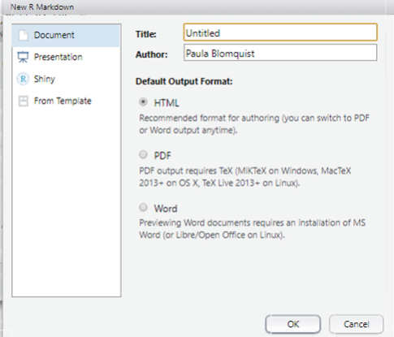
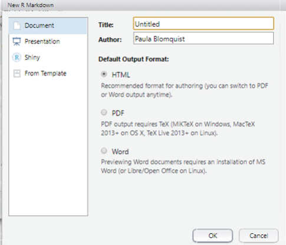

2 Análisis de datos con R
2.1 Introducción a R y RStudio
2.1.1 ¿Por qué utilizar R como lenguaje de programación?
- Código abierto: no tiene costo.
- Versátil: análisis estadístico y econométrico + tareas de programación.
- Flexible y reproducible: garantiza reproducibilidad, es flexible ante cambios y detección de errores de forma más sencilla (ej.Excel).
- Demandado: solicitado en el mercado laboral.
2.1.2 Términos clave y recurrentes a lo largo del curso
- RStudio: Interfaz Gráfica para el usuario. Esta diseñada para un uso más sencillo de R.
- Objetos: Cualquier cosa que guardes en R. Por ejemplo: bases de datos, variables, listasdenombres, gráficos.
- Funciones: Una operación producida por un código tal que acepta insumos y retorna productos.
- Paquetes: Básicamente es un conjunto de funciones útiles para distintos propósitos.
- Scripts/Códigos: Documento que contiene todos los comandos utilizados en un proceso de análisis de datos.
2.1.3 Recursos de Aprendizaje
- Hojas de resumen: material disponible con un resumen de los principales comandos/paquetes/funciones para distintos temas. Disponibles en: https://www.rstudio.com/resources/cheatsheets/
- Foros y sitios web:
- Libros:
2.1.4 Interfaz RStudio
2.1.4.1 Cuatro secciones en Rstudio
Las “más importantes” son: scripts, consola y environment/files/plots/packages.
Para personalizar RStudio hay que ir a: Tools -> Global Options. Allí pueden cambiar el color del ambiente, tipo de letra, orden, etc. La idea es utilizar RStudio de la forma mas intuitiva para ustedes.
2.1.4.2 Escribir comentarios
(#) para escribir comentarios en el script. Si quiero marcar varias lineas como comentario: ctrl + shift + c
2.1.4.3 Índices
Es importante escribir índices para documentar sus códigos. Para observarlo debo escribir: ctrl + shift + o
Los títulos pueden estar jerarquizados:
# El mas importante
## Este es un poco menos importante
### Este es un poco menos importante que el anterior
#### El menos importanteEs importante actualizarlo constantemente para no perder funcionalidad.
2.1.5 Instalación de paquetes y ayuda
Los paquetes son basicamente conjuntos de funciones. Los paquetes se instalan una vez, pero se llaman siempre que se vayan a utilizar.
2.1.5.1 Librerías
Esto se puede hacer de dos maneras:
Desde la pestaña packages en la esquina inferior derecha.
Con comandos
install.packages("dplyr")Varios paquetes a la vez:
install.packages(c("dplyr","ggplot2","rio"))Error común:
install.packages("dplyr", "ggplot2")Por lo general es bueno instalarlas desde el inicio del trabajo dado que comúnmente usamos las mismas librerías al realizar análisis de datos. Con esta función le decimos a R que instale el paquete si este no está instalado (algo típico cuando cambiamos de computador):
if(!require(dplyr)) {install.packages("dplyr")}Cargar librerías:
library(dplyr)Si queremos ver que hay dentro de cada paquete:
ls("package:dplyr", all = TRUE) #ls = list objectsImportante: el paquete debe ser instalado una vez, pero cargado cada vez que se utilice. Muchas veces hay actualizaciones. Para revisar e instalarlas.
update.packages()Alternativamente puedo conectar paquete con función utilizando ::. Si hago esto no es necesario llamar a la librería para utilizar esa función en particular. No obstante, lo recomendable es cargar todas las librerías de los paquetes que voy a utilizar al inicio.
2.1.5.2 Función de ayuda
Sobre una función en particular:
help(mean)
?mean
mean #pulsar la tecla F1
sdSobre un paquete en particular:
help("dplyr")
library(help="dplyr")2.1.5.3 Shortcuts útiles
Esc: interrumpir el comando actualCtrl + s: guardartab: autocompletarCtrl + Enter: ejecutar líneaCtrl + Shift + C: comentar<-: Alt + - / option + -%>%: ctrl + shift + m (pipe)Ctrl + l: limpiarCtrl + alt + b: ejecutar todo hasta aquí (flechas en la consola me permiten ver los últimos comandos utilizados).Shift + lineas: seleccionar varias lineasCtrl + f: buscar/remplazarCtrl + "flecha arriba" en la consola: ver comandos utilizados.
2.1.5.4 Limpiar “environment” en R
Eliminar todos los objetos:
rm(list=ls())Eliminar sólo un objeto:
rm(data1)Si quiero limpiar la consola tengo que apretar Ctrl + L.
2.1.5.5 Identificar el paquete de una función
Hay ocasiones en que queremos saber de que paquete es una función determinada. Para ello, revisar: https://sebastiansauer.github.io/finds_funs/
2.1.5.6 Error común
Por ejemplo:
x <- "hola"Noten que en la consola aparece un signo +. En estos casos RStudio se detiene porque probablemente se les olvido un ) o bien un #. En estos casos hay que corregir el error para ejecutar nuevamente y luego apretar esc en la consola para seguir ejecutando los comandos.
2.1.6 Manipulación de objetos
2.1.6.1 Usar R como calculadora/ejecutar comandos
De manera separada (seleccionar las ordenes+ctrl+Enter):
2+2
3*5^(1/2)Ejecutar todas las instrucciones:
2+2 ; 3*5^(1/2)
3+4
5*4
8/4
6^7
6^77
log(10)
log(1)
sqrt(91) # raiz cuadrada
round(7.3) # redondearIncluso grandes operaciones:
sqrt(91) + 4892788*673 - (log(4)*round(67893.9181, digits = 2))Incluso uso de números imaginarios:
2i+5i+sqrt(25i)2.1.6.2 Creacion de objetos: asignaciones y funciones
con el signo <- asignamos valores. También se puede utilizar =, pero no es recomendable, ya que confunde.
y <- 2 + 4
yLas asignaciones son MUDAS. Si no las llamo, no aparecen en la consola. Lo anterior es una operación sencilla, pero lo que queremos es generar asignaciones con funciones.
Podemos utilizar funciones. Las funciones son la parte central del uso de R. Algunas funciones vienen instaladas en R. Otras funciones hay que obtenerlas desde paquetes. También es posible escribir tus propias funciones (). Las funciones estan por lo general escritas en paréntesis, por ejemplo filter(). Hay ocasiones en que las funciones estan relacionadas con un paquete específico dplyr::filter().
- Ejemplo 1: función simple
sqrt(49)- Ejemplo 2: sobre una base de datos
summary(mtcars$mpg)Nota: mtcars viene incluidad en R.
Para ver mas:
data()Otra función:
x <- 2
y <- 3
z <-c(x,y)
zUso de funciones aritméticas:
mean(z)
median(z)Relaciones entre objetos:
w <- mean(z)Creación de objetos por asignación:
a <- 3+10
b <- 2*4Comparar objetos:
a > bNotar que las asignaciones son silenciosas:
a
b
# o altenativamente utilizar print
print(a)
print(b)Creación de objetos usando funciones:
valores <- c(a,b)
promedio <- mean(valores)
print(promedio)
promedioPodemos escribir un promedio aquí usando función mean():
a <- 2
b <- 5
valores1 <- c(a,b)
promedio1 <-mean(valores1)
print(promedio1)Limpiamos datos nuevamente:
rm(list = ls())
rm(promedio)2.1.6.3 Creacion de objetos y asignaciones
Es importante espaciar codigos. Definimos dos vectores utilizando la función c()
educ <- c(8,12,8,11,16,14,8,10,14,12)
ingreso <- c(325,415,360,380,670,545,350,420,680,465)Calculamos promedio, desviación estándar y correlación
mean(ingreso)
promedioingreso <- mean(ingreso)
sd(ingreso)
sdingreso <- sd(ingreso)
cor(educ, ingreso)
coreduing <- cor(educ,ingreso)Graficamos
plot(educ, ingreso)Estimar una regresión lineal
lm(ingreso ~ educ)Ejercicio 2.1.1: Nombrar objetos
De los siguientes ejemplos, ¿Cuáles son nombres de variables válidas en R?
# min_height
# max.height
# _age
# .mass
# MaxLength
# Min-length
# 2widths
# Calsius2kelvin2.1.7 Tipos de objetos
2.1.7.1 Vectores
R opera componente por componente, por lo que es muy sencillo poder trabajar con vectores y matrices.
Para crear un vector utilizamos la funcion c()
x <- c(1,2,3,4,5)
#o bien
y <- c(6:8)Veamos los vectores
z <- x + y
zSupongamos los siguientes vectores:
x<-c(1:4)
y<-c(1:3)¿Cuál es su longitud?
length(x)
length(y)Si no tienen la misma longitud, ¿cual sería el resultado de x + y?
z <- x + y
zIMPORTANTE: En este caso R realiza la operación de todos modos, pero nos indica que hay una advertencia de que sus dimensiones difieren. Lo relevante de los vectores es que sólo se puede concatenar elementos del mismo tipo, de lo contrario R nos arroja error.
x <- rep(1.5:9.5,4) #genera repeticiones de los valores definidos
y <- c(20:30)
x1 <- c(1,2)
x2 <- c(3,4)
x3 <- c(x1,x2)
x4 <- c(c(1,2), c(3,4))Subconjunto de un vector
y[3] # obtener el tercer elemento
y[2:4]
y[4:2]
y[c(2,6)]
y[c(2,16)]2.1.7.2 Matrices
2.1.7.2.1 Definir matrices
Sintaxis general
mi.matriz <- matrix(vector,
ncol = num_columnas, nrow = num_filas,
byrow = valor_logico,
dimnames = list(vector_nombres_filas,
vector_nombres_columnas)
)Para crear matrices utilizamos la función matrix()
x <- matrix (data = c(1,2,3,4),
nrow = 2,
ncol = 2)
x1 <- matrix(c(1,2,3,4),
2,
2)No es necesario poner data=, pero por orden mental es mejor hacerlo.
x
x1Notar que por DEFECTO rellena columna por columna. Podemos explicitar que queremos realizar la matriz fila por fila
y <- matrix(data = c(1:4),
nrow = 3,
ncol = 2,
byrow = TRUE)
yPodemos saber cual es la dimensión de x
dim(y)
dim(y)[1] # cantidad de filas
dim(y)[2] # cantidad de columnas
y<- matrix(c(1,2,3,4), nrow=2, ncol=2, byrow=2)
yLos va a repetir!
y <- matrix(c(1,2,3,4), nrow=2, ncol=3, byrow= 2)
yNotar que el orden en cualquier matrix es filas x columnas. Podemos también omitir la cantidad de filas o columnas en la matriz y obtenemos el mismo resultado
y <- matrix(c(1:4), 2, byrow=T)
y En el caso de crear matrices vacías hay que definir las dimensiones
y <- matrix(nrow=3, ncol=3)
y #útil para los loopsDarle nombre a las filas y columnas
y <- matrix (c(1:4), 2, byrow = FALSE,
dimnames=list(c("X1","X2"),c("Y1", "Y2")))
ySe puede realizar desde las funciones colnames y rownames
colnames(x) <- c("Variable 1", "Variable 2")
rownames(x) <- c("a1", "a2")
xAñadir filas o columnas a una matriz
w <- c(5,6)2.1.7.2.2 Unir matrices
Unir mediante filas (queda con el nombre del vector la observación)
z <- rbind(x,w)
zUnir mediante columnas
z <- cbind(x,w)
z¿Y si tienen diferente cantidad de filas y/o columnas? repite el vector o observaci?n con menor longitud
x <- matrix(c(1:9),3)
x
y <- c(5,6)
y
z<-rbind(x,y)
z Podemos pasar un vector a una matriz
x<-1:10
x
dim(x)<-c(2,5)
xTrasponer matrices:
x <- matrix(c(1:9),3)
xtraspuesta <- t(x)Potencialmente se pueden hacer muchas más operaciones que involucren matrices. Por ejemplo, subconjuntos de una matriz: segundo y cuarto elemento de la segunda fila:
M <- matrix(1:8, nrow=2)
M
M[1,1]
M[1,]
M[,2]
M[2,c(2,4)]2.2 Herramientas de programación
2.2.1 Objetos adicionales
2.2.1.1 Arreglos
Crear arreglos: La única diferencia con matrices es que acepta mas de dos dimensiones.
Para generarlos:
mi.arreglo <-array(vector,
dimensiones,
dimnames = etiquetas_dim)Para nombrarlos definimos etiquetas y luego las agregamos. Es mucho mejor y mas ordenado hacerlo así:
dim1 <- c("A1", "A2")
dim2 <- c("B1", "B2", "B3", "B4")
dim3 <- c("C1", "C2", "C3")Ejemplo de arreglo: Defino un arreglo de 3 matrices de 2 (filas) x 4 (columnas)
x <- array(1:24,
c(2,4,3),
dimnames = list(dim1, dim2, dim3))
xNotar la tercera dimensión!
Subconjuntos de un arreglo: x[Fila,Columna, Matriz]
x[1,2,3] # 1 fila, 2da columna, 3ra matriz
x[,,3] # 3era matriz completa
x[,4,] # 4ta columna de todas las matrices
x[,-1,2] # Todas las filas, sin la primera columna, de la matriz 2.
x[-1,c(1,2),3] # Todas las columnas, sin la fila 1, de la matriz 3.
x[-1,1:2,3] # Columnas 1 y 2, sin la fila 1, de la matriz 3.
x[,,1]*22.2.1.2 Listas
Las listas contienen elementos de diferente tipo: matrices, objetos, dataframes, vectores, etc.
x <- list(c(1:8), "R", TRUE, 2+3i, 5L)
x #separa todo componentePara acceder a un objeto dentro de la lista se debe utilizar DOBLE CORCHETE:
x[[5]]
x[5]Veamos un ejemplo de cómo trabaja:
x <- list(Titulacion = c("Economia", "Administracion", "Politica"),
Edad =c(25,23,27))
xAl nombrar los componentes dentro de la lista, podemos llamarlos sin necesidad de los corchetes:
x$Titulacion
x[[1]]
x[["Titulacion"]]
x$Edad
x[[2]]Como los componentes dentro de las listas tienen definida una naturaleza, podemos hacer operaciones con ellas también:
x[["Edad"]]*3
x$Edad[c(1,3)]*3Finalmente, tambien podemos crear listas vacias (útil para rellenar utilizando iteradores):
x <-vector("list", length = 10)Ejemplo de una lista: Definimos una lista
milista <- list(
# Primer elemento sera un vector
hospitales = c("Van Buren", "Gustavo Fricke", "Salvador"),
# Segundo elemento sera un dataframe
direccion = data.frame(
calle = c("San Ignacio", "Av. Alvarez", "Av. Salvador"),
ciudad = c("Valparaíso", "Viña del Mar", "Santiago")
)
)
milistaLlamar a subconjuntos
# Retorna el elemento de la lista
milista$hospitales
milista[2]
# Retorna el elemento, pero sin nombre y como vector
milista[[1]]
milista[["hospitales"]]
# Elementos particulares
milista[[1]][3]
milista[[2]][,1]
milista[[2]][1,]
milista[[2]][1,2]Notar que es importante saber el tipo de dato.
2.2.1.3 Dataframes
Crear un dataframe: Es básicamente una matriz donde filas y columnas tienen significado. Contiene tanto valores numericos, carácteres, variables categóricas, etc.
datos <- data.frame(Titulacion = c("Economia", "Administracion",
"Administracion"),
Edad =c(25,23,27),
ocupacion = c(1,0,1))
datosEsto es lo mas cercano a una base de datos. Es uno de los objetos básicos que veremos muchas veces a lo largo del curso.
Dimensiones de un dataframe: Para ver las dimensiones hay que utilizar nrow(), ncol() o bien dim().
nrow(datos)
ncol(datos)
dim(datos)Notar que nrow() y ncol() tambien sirven para matrices.
Subconjuntos de un dataframe: Al igual que en las matrices, utilizamos [ ] para acceder a elementos dentro de la base.
datos[1,1]
datos[,1]
datos[,-2]
datos[, c(1:2)]
datos[, c("Titulacion")]
# Tambien puedo ocupar $ para llamar.
datos$Titulacion
# Ojo que esto lo puedo hacer con todo
summary(datos[,2])
summary(datos[,2])[3]
summary(datos[,2])["Max."]Tibbles: Una version mas moderna de dataframes. Es la misma idea: lista de vectores con nombres.
Altura <- c(168, 177, 177, 177, 178, 172, 165, 171, 178, 170)
Peso <- c(88, 72, 85, 95, 71, 69, 61, 61, 51, 75)
M <- cbind(Altura, Peso)Paquete para trabajar con bases de datos (más detalles en secciones 2.3 y 2.4)
install.packages("tidyverse")
library(tibble) # Una libreria dentro de tidyverse.
misdatos <- as_tibble(M)
misdatos
# Podemos ver los nombres o bien estadistica básica de cada variable.
names(misdatos)
summary(misdatos)Agregar columnas a un dataframe: Podemos agregar variables a la base. Dos opciones:
# Opción 1: utilizando $nombre_columna<-vector
datos$id <- c(1:3)
datos
# Opción 2: utilizando el cbind (al igual que con matrices)
id2<-c(1:3)
datos1 <- cbind(id2,datos)
datos1Attach:
Notación muy inconveniente
misdatos$Altura
misdatos$PesoPara evitar escribir datos cada vez que quiera llamar a una variable voy a utilizar la funcion attach():
attach(datos) # para comenzar
# Ahora puedo llamar a sus variables sin utilizar datos
nueva <- Edad * ocupacion
nueva <- datos$Edad * datos$ocupacion
nueva
detach(datos) # para terminarEsta es una forma mucho mas conveniente de trabajar con dataframes o tibble en R.
Ejercicio 2.2.1: Crear un dataframe
Cree su primera base de datos. Debe armar una tabla igual a la figura. Tiene 5 minutos.

Respuesta:
ejer <- data.frame(Tipo_animal = c("Perro", "Perro","Gato","Perro",
"Gato","Gato","Gato"),
Color =c("Café","Blanco","Negro","Manchas","Café","Tricolor","Negro"),
Peso = c(7,5,3,4,2,5,4),
Pasea=c("Sí","Sí","Sí","No","No","No","Sí"))2.2.2 Acceder a elementos de un objeto
2.2.2.1 Vectores
Para acceder a los elementos de un objeto debemos utilizar los corchetes [ ]
# Veamos en un vector
x<-c("T", "FALSE", 1:9,1+2i,"t", "c","a",6)
class(x)
# Podemos llamar a un objeto de un vector
x[1]
x[3]De esta manera podemos extraerlo o utilizarlo en diferentes operaciones. Pero sólo debe ser entre observaciones numericas:
x[1]+x[6] #de lo contrario R nos arroja un error
y<-c(1:6, 1+2i)
y[3]+y[7]
#O podemos visualizar a x, pero sin el primer objeto
x[-1]
#O eliminar el primer objeto
x<-x[-1]
x1 <- x[-1]2.2.2.2 Matrices
Si analizamos los objetos de una matriz:
w<-matrix(1:9,3)
w
# Elemento [1,1]
w[1,1]
# Toda la primera columna
w[,1]
# Toda la segunda fila
w[2,]
# Dos columnas
w[,1:2] # w[,-3]
# Todas las filas menos la primera
w[-1,]2.2.2.3 Listas
Si queremos llamar a un objeto dentro de una lista:
z <- list(c(1:8), "R", T, 2+3i, 5L)
z #separa todo componentePara acceder a un objeto dentro de la lista se debe utilizar doble corchete:
z[[1]]
#Y algo dentro de ese objeto
z[[1]][5]
#Tambien podemos analizar su clasificacion
class(z[[1]]) #numerico
#Si es numerico, entonces tambien podemos hacer operaciones
z[[1]][3]*z[[1]][5]2.2.3 Tipos de objetos y datos
2.2.3.1 Identificar tipos de objetos
Veamos en un vector cualquiera
x<-c("T", FALSE, 1:9,1+2i,"t", "c","a",6)
class(x)Como bien sabemos todo en R es un objeto. Para saber que tipo de objeto es puedo utilizar la función class():
class(datos)
class (x)Note que class() identifico que es un “data.frame” y una lista. También puedo ver los tipos de elementos dentro de un determinado objeto. Para datos, existen 5 tipos principales, llamados:
- carácteres: texto. Se escriben con comillas (ej: “3”, “swc”).
- numéricos: numeros reales (ej. 2, 15.5).
- enteros: numeros enteros (“L” le dice a R que guarde esto como un entero).
- logical: valores logicos (ej. TRUE, FALSE).
- complejos: 1 + 4i (Numero complejos).
2.2.3.2 Identificar tipos de datos
# 1. Carácteres
z<-c("a","b")
class(z)
# 2. Números enteros
w<-c(1L,2L,3L) #la L es para obligar que sea entero
class(w)
# 3. Numéricos
w1 <- c(1,2,3)
class(w1)
# Notar que la L lo obliga a ser entero ¿Qué ocurre si no coloco la L?
# 4. Valores logicos
v1 <- c(TRUE, FALSE)
class(v1)
# Notar que si estan entre comillas son caracteres, no logical!.
v<-c("TRUE", "FALSE")
class(v)
# 5. Números complejos
t<-c(1+2i,1+3i)
class(t)Hay más clases: Date(fechas), Factor(variables categóricas), data.frame, tibble, list.
2.2.3.3 ¿Importan los tipos de los objetos?
R intenta mantener dentro de un vector el tipo de objeto. Si es que tratamos de juntar distintos tipos de datos en un vector. Igualar a la clase. Por ejemplo, si intentamos generar un vector con texto y número/logical todo será texto:
h <- c(TRUE,"a", TRUE, 2)
h
class(h)Si intentamos juntar un “Logical” con un número todo será número:
h1 <- c(TRUE,2,3)
h1
class(h1)Aquí carácter todo se va a caracter:
x <- c("T", "FALSE", 1:3, 1+2i, "t", "c", "a")
class(x)
y <- c(1:4)
class(y)
y <- c(1,2,3,4)
class(y)Si utilizo el operador : para crear vectores lo interpreta como un integer.
2.2.3.4 Forzar a R para que utilice un tipo de dato
Forzar a R a llevar el vector solo a numérico:
z <- as.numeric(x)
class(z)
z as.numeric() fuerza al vector a solo tener números. Noten que remplaza los que no son numérico por NA.
Forzar a R a llevar el vector solo a carácteres:
z1 <- as.character(y)
class(z1)
z1Noten que ahora se agregaron las dobles comillas.
Forzar a R a llevar el vector sólo a carácter.
x
z2 <- as.logical(x)
class(z2)
z2 Noten que “T” fue aceptado como TRUE!
2.2.3.5 ¿Cómo saber que tipo de datos tengo?
# Puedo preguntar a R sobre el tipo.
is.numeric(y) # Es numerico?
is.character(y) # Es caracter?
is.logical(y) # Es logico?
# La respuesta a esta pregunta va a ser un valor lógico
class(is.numeric(y))
# También se puede utilizar la opcion `typeof`
typeof(y)2.2.3.6 Mayúsculas importan
Como vimos en lasección anterior, R es sensible a las mayúsculas. Esto aplica para nombres de funciones, paquetes, comando y también para los datos. Por ejemplo:
x <- c("A", "a","a","a", "B", "B","b", "A")
length(x)
sum(x == 'a')
sum(x == 'b')Para R las minúsculas y mayúsculas SI IMPORTAN!.
2.2.3.7 Carácteres especiales
Vimos que existen nombres de variables no validos en R. Tambien existe un conjunto de caracteres invalidos.
- NA: Not Available (missing values)
- NaN: Not a Numbers (ej. 0/0)
- Inf: Infinito (1/0)
- -Inf: Menos infinito
0/0
-1/0 2.2.3.8 Missing values
En R, los valores perdidos (“missing values”) se representan con el valor especial NA (letras mayusculas N y A - sin comillas). Para saber si tengo valores NA en un objeto, puedo ocupar la funcion is.na():
ejemplo <- c(1,3,NA,4)
is.na(ejemplo)
ejemplo[!is.na(ejemplo)]
# El resultado es un vector. Noten que es importante para utilizar algunas funciones:
mean(ejemplo)
mean(ejemplo, na.rm = TRUE)No funciona en el primer caso, si en el segundo. Veremos mas detalles sobre como tratar missing values (ej. recodificar) en las clases de manipulacion y analisis de datos.
2.2.3.9 Funciones útiles
# Redondear
round(x,digits = n)
round(c(2.53, 3.52), 1)
# Estadística simple
x <- c(1,2,3,4,5,6)
mean(x) # promedio
median(x) # mediana
sd(x) # desviacion estandar
sum(x) # suma del vector
min(x) # Valor minimo
max(x) # Valor maximo
range(x) # rango
summary(x) # resumen
# Notar que tienen que ser vectores!
mean(10, 6, 12, 10, 5, 0)
mean(c(10, 6, 12, 10, 5, 0))
# En el primer caso sólo toma el primer valor! Ojo, siempre un vector.
# Otras funciones
seq(1,10,2 ) # Crear secuencias
rep(c(1,2,3),10) # Repetir
cut(x,2) # subdividir
sample(x, size = 3, replace = TRUE) # Generar un aleatorio
# El analisis de datos es...
Altura = c(168, 177, 177, 177, 178, 172, 165, 171, 178, 170)
Peso = c(88, 72, 85, 95, 71, 69, 61, 61, 51, 75)
M = cbind(Altura, Peso)
# Paquete para trabajar con bases de datos (más detalles en secciones 2.3 y 2.4)
install.packages("tidyverse")
library(tibble) # Una libreria dentro de tidyverse.
misdatos <- as_tibble(M)
misdatos
attach(misdatos)
max(Altura)
min(misdatos$Peso)
detach(misdatos)2.2.4 Herramientas en R
2.2.4.1 Escribir Códigos
Algunos comentarios con respecto a la escritura de codigos:
- Siempre escribir comentarios autocontenidos.
- Siempre utilizar índice.
- Me permite reducir el código.
- Me permite ver donde estoy también en un código largo.
- Puedo verlo con ctrl + shift + O o bien en la esquina inferior izquierda del script.
- Separar códigos largos en varios códigos. Cada código debe tener un objetivo claro que debe explicar en una oración.
- Escribir códigos en bloques.
- Tres consejos básicos de estilo:
- utilizar
_para generar variables o bien otra convención. - separar entre objetos y operaciones.
2.2.4.2 Condicionales y controladores de flujo
Operadores básicos:
rm(list=ls())
# Asignador
a <- 2 * 3
a
a1 = 2 * 3
a1
# Nota: Nunca ocupar igual.
# Igualdad
TRUE == TRUE
TRUE == FALSE
# Nota: Para comparar elementos se utiliza doble igual "==".
# Desigualdad (!=)
TRUE != FALSE
"Hola" != "Chao"
# Otros comparadores: <, > (>=), (<=)
3 < 5
5 > 8
5 >= 5
# Nota: No confundir con <- que es para asignar.
TRUE > FALSE
# Noten que la respuesta en un logical.
# En vectores y matrices
vector1 <- c(16,9,13)
vector2 <- c(10,12,15)
# Comparar contra un escalar
vector1 > 10
vector2 < 10
# Compararlos entre ellos
vector1 < vector2
# Veamos en una matriz
matrix <- matrix(c(vector1, vector2),
byrow = TRUE,
nrow = 2)
matrix
matrix > 10Operador %in%: Un operador muy útil para comparar valores y para evaluar rápidamente si un valor está dentro de un vector o marco de datos.
rm(list=ls())
v1 <- 3
v2 <- 101
t <- c(1,2,3,4,5,6,7,8)
# El valor v1 ¿se encuentra dentro de t?
v1 %in% t
# Otro ejemplo....
mivector <- c("a", "b", "c", "d")
"a" %in% mivector
# Si no está en el vector da un FALSE
"h" %in% mivector
# Si le quiero preguntar si NO está, coloco un signo de exclamación al frente.
!"a" %in% mivector
# Un vector en otro vector
a <- seq(12, 19, 1)
b <- seq(1, 16, 1)
# Veamos si los elementos de un vector "largo" están en uno "corto"
b %in% a
# Esto va a ser muy útil cuando trabajemos con bases de datos. Operadores para seleccionar subconjuntos de datos:
y <- c(2,3,3,4,NA,8)
y
# Vamos a seleccionar solo los que no son NA
y1 <- y[!is.na(y)]
y1
# Noten que utilizamos la funcion is.NA y un operador (!). Más detalles en parte de análisis de datos, pero noten que la idea principal está aquí. Operadores lógicos:
# Operador (&): operador "y"
TRUE & TRUE
TRUE & FALSE
FALSE & TRUE
FALSE & FALSE
# Ejemplo
x <- 12
x > 5 & x < 11
# Operador (|): operador "o". Condiciones no excluyentes.
TRUE | TRUE
TRUE | FALSE
FALSE | TRUE
FALSE | FALSE
# Ejemplo
y <- 4
y < 5 | y > 15
# Operador de negación (!)
!TRUE
!FALSE
# Combinarlo con funciones
!is.numeric(5)
!is.numeric("Hello")
# Operadores con vectores
c(TRUE, TRUE, FALSE) & c(TRUE, FALSE, FALSE)
c(TRUE, TRUE, FALSE) | c(TRUE, FALSE, FALSE)
!c(TRUE,TRUE,FALSE)
# Si utilizo dos "&&" sólo compara el primer elemento del vector
c(TRUE,FALSE,FALSE) || c(TRUE,FALSE,FALSE)
c(TRUE,FALSE,FALSE) && c(TRUE,TRUE, TRUE)2.2.4.3 Condicionales
If:
x <- 3
#if (condicion){
# cualquier cosa que quiero que se haga si la condición se cumple
#}
if (x > 0) {
print("x es número mayor que cero")
}
if (x > 0){
print("x es un número mayor que cero ")
}
if (x < 0){
print("x es un número menor que cero")
}Else:
x <- 0
if (x > 0){
print("x es un número positivo")
} else{
print("x es un número negativo")
}Elseif:
x <- 0
if (x > 0){
print("x es mayor que cero")
} else if (x == 0){
print("x es igual a cero")
} else{
print("x es menor que cero")
}
# Importante: `(%%) corresponde al resto de una división`
x <- 6
if (x %% 2 == 0){
print("x es divisible por 2")
} else if (x %% 3 == 0){
print("x es divisible por 3")
} else {
print("x no es divisible ni por 2 ni por 3")
}
# Notar que si la primera condición se cumple, la segunda no se ejecuta aunque sea cierta. 2.2.4.4 Funciones
Idea principal: \(f(x) = 2x + 1\), \(x \in R\) \(f(x) = 'hola' + x\), \(x \in ('pepe', 'pepa', 'marta')\)
valores <- c(1,2,3,4)
mean(valores)Algunas cosas adicionales sobre funciones: n me permite ver los argumentos de una función, sin necesidad de ver la documentación. Útil a veces.
# Escribir funciones con un argumento
triple <- function(x){
y <- 3 * x
return(y)
}
triple <- function(x){
x/2
}
triple(500)
# Escribir funciones con mas de un argumento
operacion <- function(a,b){
a*b + a/b
}
operacion(4,2)
# Escribir funciones fijando opción por defecto.
operacion_defecto <- function(a,b = 1){
a*b + a/b
}
operacion_defecto(4)
operacion_defecto(4,0)
# Escribir funciones utilizando if y return.
operacion_condicionales <- function(a,b = 1){
if (b == 0){
return(0)
}
a*b + a/b
}
operacion_condicionales(4,0)
# Funciones con texto
texto <- function(){
print("Hola mundo!")
return(TRUE)
}
texto()
# Funciones por defecto en ambos casos
operacion_dosdefectos <- function(a = 1,b = 1){
if (b == 0){
return(0)
}
a*b + a/b
}
operacion_dosdefectos()Ejercicio 2.2.2: Funciones
Genere una función que sea igual a la división de dos elementos. Coloque un mensaje que indique cuando la división es indeterminada.
Respuesta:
operacion_indeterminada <- function(a,b){
a/b
if (b == 0){
print("Es indeterminado")
}
}
operacion_indeterminada(1,0)2.3 Manipulación de bases de datos (Parte I)
2.3.1 Principios de programación
2.3.1.1 Iteradores
For loop:
# Imaginen que queremos mostrar los nombres de un vector de forma reiterada
ciudades <- c("Nueva York", "Paris", "Santiago", "Rancagua")
print(ciudades[1])
print(ciudades[2])
print(ciudades[3])
print(ciudades[4])
# Lo anterior se puede hacer utilizando un iterador.
for (i in 1:4){
print(ciudades[i])
}
# Utilizando variables ocultas...
for (.j in 1:4){
print(ciudades[.j])
}
for (.j in 1:length(ciudades)){
print(ciudades[.j])
}
# o escrito señalando el nombre de cada elemento de un vector.
for (ciudad in ciudades){
print(ciudad)
}
# Otro ejemplo:
semana <- c("Domingo",
"Lunes",
"Martes",
"Miercoles",
"Jueves",
"Viernes",
"Sabado")
for (dia in semana)
{
print(dia)
}For loop con opciones:
ciudades <- c("Nueva York", "Paris", "Santiago", "Tokio")
# Agregar opcion break: quiebra el loop
for (ciudad in ciudades){
if(nchar(ciudad) == 8){
break
}
print(ciudad)
}
# Agregar Opción next: se salta ese elemento
for (ciudad in ciudades){
if (nchar(ciudad) == 8){
next
}
print(ciudad)
}Flexibilizar el iterador:
ciudades <- c("Nueva York", "Paris", "Santiago",
"Tokio", "Rancagua", "Roma")
# Ahora el tamaño del loop es flexible. Esto es muy inportante para cuando trabajemos con bases de datos.
for (i in 1:length(ciudades)){
print(ciudades[i])
}
# Noten que ahora llamo a los elementos dentro de un loop como subconjuntos de un vector.
# En resumen, dos versiones de lo mismo
for (i in 1:length(ciudades)){
print(ciudades[i])
}
for (ciudad in ciudades){
print(ciudad)
}
# Ejemplo: para dejar mensajes
for (i in 1:length(ciudades)){
print(paste(ciudades[i], "esta en la posicion",i,
"en el vector ciudades"))
}
# Lo anterior es aplicable para inspecciones de bases de datos, por ejemplo, podemos dejar un mensaje
for (i in 1:length(mtcars)){
print(paste("el promedio de la variable",
names(mtcars[i]), "es",
mean(mtcars[,i])))
}While: mientras que…
x <- 1
while (x <= 7){
print(paste("x es", x))
# Actualización
x <- x + 1
}
while (x <= 700){
print(paste("x es", x))
# Actualizacion
x <- x + 1
}
# Muy importante la actualización.2.3.1.2 Lapply, Sapply y Vapply
Lapply:
nyc <- list(poblacion = 8405837,
barrios = c("Manhattan", "Bronx",
"Brooklyn", "Queens",
"Staten Island"))
nyc- Equivalencia loop y lapply. Quiero saber todas las clases de la lista:
# Puedo hacer esto con un loop
for (objeto in nyc){
print(class(objeto))
}
for (i in 1:length(nyc)){
print(class(nyc[[i]]))
}
# Pero, si utilizo `lapply()` puedo hacerlo mucho más eficiente.
# Lapply: que aplica esto como si fuese un `for`.
lapply(nyc,class)- Resultado de lapply con vector:
# Lapply ejecuta la función, en este caso class, para todo elemento del objeto, en este caso nyc.
# Si quiero saber el número de carácteres
cities <- c("New york","Paris", "Tokyo", " Rio de Janeiro")
lapply(cities,nchar)
class(lapply(cities,nchar))
# Noten que el resultado aquí es una lista. Si quiero que sea un vector, puedo utilizar la función `unlist()`.
unlist(lapply(cities,nchar))
class(unlist(lapply(cities,nchar)))- Lapply como función:
precios <- list(2.25, 2.18, 2.89, 2.84, 2.89)
# Creamos una función
multiplicar <- function(x,factor){
x * factor
}
# Ahora, podemos aplicar lapply y agregar opciones de la función
tresveces <- lapply(precios, multiplicar, factor = 3)
tresveces <- unlist(tresveces)
# Noten que la sintaxis es: objeto, función, opciones. Es decir, igual a lo anterior, pero pudiendo agregar opcionales. Sapply: Es una variacion de lapply que sirve para simplificar lapply. Ahora el resultado es un vector, no una lista.
cities <- c("New york","Paris", "Tokyo", " Rio de Janeiro")
lapply(cities,nchar)
sapply(cities,nchar)
# Noten que es bastante ordenado. Sin embargo, falla cuando no es fácil ordenar el resultado. Vapply: Es una variación que sirve para definir explícitamente el tipo de objeto del resultado.
vapply(cities, nchar, numeric(1))2.3.2 Manipulacion de bases de datos en R
Analizar datos es parte importante de las labores que uno desea realizar al utilizar R. Vamos a revisar cuatro aspectos iniciales de cualquier trabajo con datos:
- Importar datos en distintos formatos.
- Inspeccionar y limpiar los datos que tenemos.
- Transformar los datos con el fin de crear nuevas variables.
- Juntar bases de datos de distinto tipo.
2.3.2.1 Importar bases de datos
Para poder utilizar, cargar, renovar datos es importante tenerlos todos en un solo lugar.
Esto también aplica para los resultados y codigos.
Para que esto efectivamente ocurra necesitamos decirle a R cual va a ser nuestro directorio de trabajo. Es decir, el lugar donde guardaremos los datos que queremos trabajar, los resultados de nuestros análisis y nuestros códigos.
Directorios de trabajo en R:
# Me dice donde estoy
getwd()
# Si quiero indicarle otra ruta tengo dos opciones:
# Opcion 1: Indicar a R la ruta/carpeta donde tengo mis datos
setwd("C:/Users/catab/Dropbox/Cursos de R/Curso R - Noviembre 2022/Clase 3")
# Opcion 2: Lo mismo que opcion 1, pero más ordenado.
ruta <-"C:/Users/catab/Dropbox/Cursos de R/Curso R - Noviembre 2022/Clase 3"
setwd(ruta)
# Noten que es necesario ocupar `/`. Por defecto las rutas al copiarlas vienen con otro tipo de "slash". Para cambiarlas fácilmente, y no una por una, vamos a utilizar `ctrl + f`.
# Con este atajo podemos remplazar varios elementos a la vez. Cuidado!! Es importante decirle si queremos que modifique todo el documento o bien solo una parte.
dir(ruta)Ejemplo de ordenar carpetas:
ruta <- "C:/Users/catab/Dropbox/Cursos de R/Curso R - Noviembre 2022/Clase 3"
# Codigos
codigos <- "C:/Users/catab/Dropbox/Cursos de R/Curso R - Noviembre 2022/Clase 3/codigos"
codigos <- paste(ruta,"/","codigos", sep = "")
setwd(codigos)
dir(codigos)
# Datos
datos <- "C:/Users/catab/Dropbox/Curso R - Agosto 2022/Clase 3/datos"
datos <- paste(ruta,"/","datos",sep="")
dir(datos)
# Datos raw
datosraw <- "C:/Users/catab/Dropbox/Cursos de R/Curso R - Noviembre 2022/Clase 3/datos/raw"
dir(datosraw)
# Todo lo anterior no es muy recomendado. Proyectos de R:
- Proyecto: piensen en muchos proyectos con muchos códigos.
- Es una herramienta incorporada en RStudio que permite manejar un proyecto de análisis de datos.
- Permite dividir el trabajo en múltiples contextos cada uno con su propio directorio de trabajo, espacio de trabajo e historial.
- ¿Por qué utilizarlo?
- Mantiene códigos y datos en la misma carpeta.
- Mantiene códigos y datos separados de otros proyectos: evita confusiones o errores.
- Identifica automáticamente el directorio de trabajo, facilitando cooperación.
Pasos para crear un proyecto:
- Dos opciones:
- R crea una carpeta de trabajo.
- Crear una carpeta primero, y luego decirle a R que la identifique.
- Todos los nuevos archivos serán automáticamente guardados en la carpeta del proyecto.
- Una vez hecho el proyecto se genera un archivo con extensión
R.proj. - Aquí R guarda información del proyecto: historial, datos, etc.
- Lo más importante es que fija el directorio de trabajo de forma tal de que siempre sea el mismo una vez que se abre un proyecto. Evita cambiar directorios de trabajo al colaborar.
Package here:
install.packages("pacman")
pacman::p_load("here")
here()
here("datos")Package rio: R tiene bases de datos propias. Sin embargo, muchas veces van a querer trabajar con datos propios. o bien de datos públicos que muchas veces estan en distintos formatos. Rio package es una forma flexible de importar datos en distintos.
Rio debe su nombre por R input/output. Dos funciones principales: import() y export(). Además, cuando se le indica la extensión a rio este leerá y utilizará la herramienta indicada para leer esos datos.
library(pacman)
p_load(here, # Modificar carpetas
rio) # Importar/exportar datosHay otras opciones tambien para importar datos. Por ejemplo, read.csv() ("base R"); read.xlsx ("openxlsx"). El problema es que son difíciles de recordar. Mejor utilizar una.
Importar datos en distintos formatos: Utilizar import() para importar un conjunto de datos es bastante sencillo. Basta con proporcionar la ruta del archivo (incluyendo el nombre y la extensión del archivo) entre comillas.
# Ocupamos R project, here e import para importar datos fácilmente
datos_xlsx <- import(here("datos", "Data.xlsx"))
datos_dta <- import(here("datos", "Data.dta"))
datos_txt <- import(here("datos", "Data.txt"))
datos_csv <- import(here("datos", "Data.csv"))Opciones:
# 1. Importar distintas hojas: Por defecto se importa la primer hoja de una base de datos, con "which" puedo elegir la hoja.
datos_xlsx_h1 <- import(here("datos", "Data.xlsx"),
which = "hoja1")
datos_xlsx_h2 <- import(here("datos", "Data.xlsx"),
which = "hoja2")
# 2. Puedo decirle a priori que valores son missings.
# Especificar un missing
datos_xlsx <- import(here("datos", "Data.xlsx"), na = "2018")
# Especificar varios a la vez..
datos_xlsx <- import(here("datos", "Data.xlsx"),
na = c("Missing", "", " "))
# 3. Saltar filas.
datos_xlsx <- import(here("datos", "Data.xlsx"), skip = 1)
# Noten que puedo hacerlo con cualquier tipo de datos, ya que son opciones de la función `rio`.
datos_dta <- import(here("datos", "Data.dta") , skip = 1)
# En la tabla de este link pueden ver los distintos paquetes que soporta `rio`, junto a ejemplo adicionales.
browseURL("https://cran.r-project.org/web/packages/rio/vignettes/rio.html") 2.4 Manipulación de bases de datos (Parte II)
Ya sabemos cargar datos. Ahora vamos a hacer el primer proceso para analizar cualquier base de datos.
2.4.1 Funciones clave
Tidyverse es una colección de paquetes de R. Tidyverse contiene múltiples paquetes que iremos utilizando. Incluye: dplyr, ggplot2, tidyr, stringr, tibble, purrr, magrittr y forcats. Una paquete clave es dplyr que contiene muchas funciones para trabajar con bases de datos.
Instalamos tidyverse:
install.packages("tidyverse")
library(tidyverse)
library(pacman)
p_load(tidyverse)2.4.2 Operador piping
Piping %>%: crtrl + shift + m. Paquete asociado: magrittr
p_load(magrittr)- Operador que permite encadenar las funciones para realizar de manera sencilla transformaciones complejas en las bases de datos.
- Lo que dice es pasar el elemento que esta a su izquierda como un argumento de la función que tiene a la derecha.
- Coloca el énfasis en las acciones. Pasa un output intermedio de una función a la siguiente.
magrittres el paquete que permite ocuparpiping.pipingse utiliza mucho con las librerias detidyverseydplyrenfocadas en análisis de datos.- Excelente cuando existe una secuencia de acciones/operaciones que queremos realizar.
data(iris)
# Ejemplo 1: usar pipe como encadenador
head(iris, n = 4)
# Con piping
iris %>% head(n = 4)
# Ejemplo 2: obtener número total de observaciones y un promedio.
summarize(mtcars,
media = mean(disp))
mtcars %>% summarize(promedio = mean(disp))
# Con piping
mtcars %>%
filter(mpg > 20) %>%
summarise(promedio = mean(disp))
promedio_mpg_20 <- mtcars %>%
filter(mpg > 20) %>%
summarise(promedio = mean(disp))
promedio_mpg_20 2.4.3 Proceso de análisis de datos (Parte I): cargar, inspeccionar y limpiar
Preámbulo:
# Limpiar
rm(list = ls())
# Cargamos paquetes que vamos a utilizar
library(pacman)
p_load(
rio, # Importar/Exportar datos
here, # Determinar las rutas de mi carpeta
tidyverse, # Analisis de datos y visualización
magrittr, # Para utilizar operador %>%
janitor # Para análisis de datos
)
# Importamos datos
datos <- import(here("datos", "Data.xlsx"), which = "hoja1") Inspeccionar:
# Visión general
datos
view(datos)
# Para una inspección detallada
p_load(skimr)
skim(datos)
str(datos)
# Mirar algunas filas, columnas, etc.
head(datos) # muestra las 6 primeras filas
tail(datos) # últimas 6 filas
head(datos, 11) # podemos pedir m?s de 6
tail(datos, 3) # o menos de 6
# Mirar nombre variables/columnas
names(datos)
datos %>% names()
# `names()` también puede ser
names(datos) <- c("YEAR", "GDP", "GROSS_EXPORTS",
"GROSS_IMPORTS", "NET_EXPORTS" )
names(datos)
# Mirar filas
row.names(datos)
row.names(mtcars)
# Mirar la cantidad de variables de la base de datos
length(datos) # columnas o variables
dim(datos)
ncol(datos)
nrow(datos)
# ¿Qué tipo de objeto es?
class(datos)
# También podemos inspeccionar elementos específicos
datos<- import(here("datos", "Data.xlsx"), which = "hoja1")
# Si queremos ver la columna de GDP
datos$gdp
datos[2]
datos[,2]
# Para llamarlos solo por su nombre recordar ocupar `attach()`
attach(datos)
gdp
detach(datos)
# Si queremos un objeto dentro de una variable
datos$gdp[7]
datos[7,2] #[fila, columna]
datos[7,"gdp"]
# Si queremos seleccionar parte de la columna
datos$gdp[5:10]
# o bien (solo por `attach()`)
attach(datos)
gdp[1:2]
# o bien
datos[1:2,2] # mostrar las filas 1:2, de la columna 2
# `table()` me permite hacer una tabla sencilla de frecuencias
table(datos$year)
attach(datos)
table(year)
detach(datos)Ejercicio 2.4.1: Utilizando el operador pipping, mostrar las últimas 2 filas de las primeras 11 filas.
Limpiar:
names(datos) <- c("YEAR", "GDP", "GROSS_EXPORTS",
"GROSS_IMPORTS", "NET_EXPORTS" )
names(datos)
# La función `clean_names()` del paquete `janitor` estandariza nombres:
datos_nuevos <- clean_names(datos)
names(datos)
names(datos_nuevos)Renombrar variables:
rm(list = ls())
datos<- import(here("datos", "Data.xlsx"), which = "hoja1")
# Función para renombrar variables. Sintaxis: rename(nuevonombre = viejonombre)
# Escribamos esto, pero con `piping`
datos_renombrados <- datos %>%
rename(tiempo = year,
pib = gdp,
exportaciones = gross_exports)
names(datos_renombrados)
rm(datos_renombrados)Seleccionar variables o columnas:
rm(list= ls())
datos<- import(here("datos", "Data.xlsx"), which = "hoja1")
# select() de `dplyr` permite seleccionar variables
datos_select <- datos %>%
select(year, gdp)
datos_select1 <- datos %>%
select(c(1:4))
datos_select1 <- datos %>%
select(c(1:ncol(datos)-1))
# También puedo seleccionar en base a un criterio (Sólo sirve para string)
datos_select2 <- datos %>%
select(year, contains("Gross"))
# Con `select` también se puede renombrar
datos_select_renombrados <- datos %>%
select(tiempo = year,
pib = gdp)
# Una opción es ocupar select con `everything()` para ordeanar mis columnas.
datos_select_ordenados <- datos %>%
select(gdp, year, everything()) Remover columnas:
# La idea aqui es decir: todas se quedan, menos las que pongo aquí.
datos_select_remover <- datos %>%
select(-c(gdp, year)) Mirar si hay duplicados. En ocasiones es importante revisar si hay duplicados. El paquete dplyr contiene distinct(). Esta función examina cada fila y reduce los datos solo a las que sean valores diferentes:
datos1 <- datos %>% distinct()
# ¿Cuantos duplicados?
nrow(datos)
nrow(datos1)
dif <- nrow(datos) - nrow(datos1)
dif2.4.4 Proceso de análisis de datos (Parte II): cargar, inspeccionar y limpiar
Cargar:
# Limpiamos consola
rm(list = ls())
# Cargamos paquetes que vamos a utilizar
pacman::p_load(
rio, # importar/exportar datos.
here, # escribir rutas de las carpetas.
janitor, # limpiar datos y tablas.
tidyverse, # Manejo de bases de datos y visualización.
magrittr, # Permite utilizar operador %>% (piping).
skimr, # Inspeccionar datos
inspectdf, # Inspeccionar datos
gapminder # Base de datos con información de países.
)
data("gapminder")
gapminder %>% view()
# Cargamos datos que vienen incluidos en R.
data(starwars)
starwars Inspeccionar datos:
# Inspect_cat() retorna una base de datos que resume características de un data.frame.
inspeccion <- inspect_cat(starwars)
inspeccion
class(inspeccion)
# Las columnas son:
# col_names: nombre de cada columna
# cnt: número de valores únicos por nivel
# common: el nivel más común
# common_pcnt: el porcentaje de ocurrencia del nivel más común.
# levels: una lista de dataframes (tibbles) cada uno con tablas de frecuencia para todos los niveles.
# Notar que una de las columnas de un data frame pueden ser listas:
inspeccion[1,5]
inspeccion[2,5]
inspeccion[3,5]
inspeccion[4,5]
inspeccion[5,5]
# Ahora, si quiero ver el contenido, debo utilizar doble paréntesis cuadrado
inspeccion[1,5] # Con el nombre
inspeccion[[1,5]] # El contenido
inspeccion[[5]] # El contenido de todas las filas, en este caso, listas
inspeccion[[5]][[1]]
inspeccion[[5]][[2]]
# Una forma más simple de mirar esta información es:
inspeccion$levels$eye_color
inspeccion[[5]][[1]]
# Otra cosa interesante de este paquete es la función `show_plot()`
starwars %>% inspect_cat() %>% show_plot()
# Esta función permite ver las categorías de cada variable categórica. Noten que las zonas en gris son los NA. Limpiar bases de datos (continuación):
rm(list= ls())
datos<- import(here("datos", "Data.xlsx"), which = "hoja1") - Seleccionar columnas:
# Vimos que `select()` es parte importante. `select()` puede ser utilizado con varias funciones adicionales:
# 1. everything () - todas las otras columnas no mencionadas.
datos_everything <- datos %>%
select (year, gdp, everything())
# 2. last_col () - la última columna.
datos_last_col <- datos %>%
select(year, last_col())
# 3. where () - aplicar una función a todas las columnas y
# selecciona solo las que cumple esta condición
# (es decir, cuando es verdadera).
datos_where <- datos %>%
select(where(is.logical))
# 4. contains () - columns containing a character string
datos_contains <- datos %>%
select(contains("exports"))
# 5. starts_with () - selecciona la variable si se tiene un prefijo determinado
datos_starts_with <- datos %>%
select(starts_with("gross_"))
# 6. ends_with () - selecciona la variable si se tiene un sufijo determinado
datos_ends_with <- datos %>%
select(ends_with("_imports"))
# 7. matches () - aplicar una expresión regular
datos_matches <- datos %>%
select(matches("gross|gdp"))
# 8. any_of () - la selecciona si la columna existe pero NO retorna error
# si no la encuentra.
datos_any_of <- datos %>%
select(any_of(c("year", "gdp", "cualquiercosa")))- Manipulación de NAs: Con vectores. Los NA son parte importante de la limpieza de los datos. Recordemos que la función
is.na()nos permite identificarlos.
x <- c(1,2,NA,NA,5)
malos <- is.na(x)
malos
class(malos)
# Si queremos eliminar los NA es cosa de colocar un vector sobre otro
x[!malos]
x[!is.na(x)]
x <- x[!malos]
x- Manipulación de NAs: con
complete cases()
# Miremos un caso más práctico con iris
summary(iris)
skim(iris)
data("iris")
# Generar NA en la base de datos (después veremos esto en detalle ahora concéntrense solo en los NA)
iris$Sepal.Length<-ifelse(iris$Sepal.Length<5, NA,iris$Sepal.Length)
# Dos opciones:
# (i) como antes
malos <- is.na(iris$Sepal.Length)
iris2 <- iris[!malos,]
iris2
# (ii) utilizando `complete.cases()`
completos <- complete.cases(iris$Sepal.Length)
head(completos, 100)
# Creamos una base nueva solo con casos completos.
iris3 <- iris[completos,]
head(iris3)
summary(iris3) 2.5 Manipulación de bases de datos (Parte III)
2.5.1 Crear Variables
2.5.1.1 Crear variables binarias
Ahora vamos a ver como crear variables dicótomas o binarias. Estas variables son muy importantes para hacer análisis de datos. Vamos a utilizar la función ifelse().
rm(list= ls())
data <- import(here("datos", "Data.xlsx"), which = "hoja1")
# Asignar valor 1 si estamos en democracia, 0 caso contrario
data <- data %>% mutate(demo = ifelse(year>=1990,1,0))
table(data$demo)
# Tabla 1: ¿Cual fue el pib promedio en democracia y en dictadura?
tabla1 <- data %>% group_by(demo) %>%
summarize(promediopib = mean(gdp, na.rm = TRUE))
tabla1
# Asignar valor 1 si estamos en democracia y el pib es mayor a su media
data <- data %>% mutate(avance = ifelse(demo == 1 & gdp > mean(gdp),
1,0))
mean(data$gdp)
# Asignar valor 1 si estamos en democracia y si dentro de esos periodos
# las exportaciones netas son mayores a la mediana de las importaciones
data$expo <-ifelse(data$demo==1, ifelse(data$gross_exports>
median(data$gross_imports),1,0),0)
table(data$expo)Ejercicio 2.5.1: Escriba lo anterior utilizando mutate.
Respuesta:
data <- data %>% mutate(expo = ifelse(demo==1,
ifelse(gross_exports>
median(gross_imports),1,0),0))2.5.1.2 Crear variables categóricas
También podemos crear variables categóricas utilizando ifelse(). De manera muy sencilla podemos generar variables según ciertas condiciones:
# De manera muy sencilla podemos generar variables según ciertas condiciones
data$tipo<-ifelse(data$year<1980 & data$year>1959,1,
ifelse(data$year<2000 & data$year>1979,2,
ifelse(data$year<2010 & data$year>1999,3,4)
)
)
table(data$tipo)
# Nota: no es recomendable utilizar o escribir tantos `ifelse()` juntos.
# Es mejor utilizar `case_when()` que veremos un más adelante. 2.5.2 Factores
R puede codificar automáticamente una variable categorica (factor) con un número entero. Sirven para hacer estadisticas o estimar regresiones. Los factores, pueden ser ordenados o no ordenados, se utilizan para representar variables que se agrupan en categorías.
Veamos un ejemplo:
x <- rep(c("Ford","BMW","Peugeot"),10)
x
class(x)
# `factor()`
factor_nominal <- factor(x)
factor_nominal
class(factor_nominal)
levels(factor_nominal) #para analizar que niveles tiene el objeto
table(factor_nominal) # resume la cantidad de observaciones por nivel2.5.3 Funciones útiles para transformar bases de datos
across(): Algunas veces queremos aplicar una función a múltiples variables, para ello vamos a utilizar la función across() y especificar la función con fns. Por ejemplo:
datos2 <- data %>%
mutate(across(cols = everything(), fns = as.numeric))
# Aquí `across()`, que es una función de "dplyr", permite ser utilizada con `mutate()`, `select()`, `filter()`, `summarise()`, etc.
datos3 <- data %>%
mutate(across(.cols = contains("gross"), .fns = as.numeric))cumsum(): Suma acumulada
# Para hacer operaciones acumuladas
sum(c(2,4,15,10)) # Retorna la suma del vector
cumsum(c(2,4,15,10)) # Retorna la suma acumulada del vector
# Puedo utilizarla con mutate ()
datos_acumulados <- data %>%
arrange(year) %>%
count(gdp) %>%
mutate(gdp_acumulado = cumsum(n))
datos_acumuladosRecodificar variables: A continuación se presentan algunos escenarios en los que es necesario recodificar (cambiar) los valores:
- Editar un valor específico (por ejemplo, una fecha con un año o formato incorrecto)
- Para conciliar valores que no se escriben igual
- Crear una nueva columna de valores categóricas
- Crear una nueva columna de categorías numéricas (por ejemplo, categorías de edad)
recode (): Cambiar valores
rm(list= ls())
data <- import(here("datos", "Data.xlsx"), which = "hoja1")
data <- data %>% mutate(demo = ifelse(year>=1990,1,0))
# Seguimos con data
names(data)
# Creamos una nueva variable
datos <- data %>% mutate(regimen = ifelse(demo == 1, "Democracia", "Dictadura"))
datos
# Recodificamos (cambiar nombres)
datos <- datos %>%
mutate(regimen = recode(regimen, "Democracia" = "Demo",
"Dictadura" = "Dict"))
datos
# Notar que es vieja variable por nueva variablereplace(): Reemplazar valores
datos <- datos %>% mutate(avance = ifelse(demo == 1 & gdp > mean(gdp),
1,0))
# Similar sintaxis a la de recode
datos <- datos %>%
mutate(regimen = replace(regimen, avance == 0, "No cambio en el pib"))
# Sintaxis
# mutate(columna a cambiar = replace(columna a cambiar,
# criterio para las filas,
# nuevo valor)).
# Un equivalente a `replace()` es utilizar [].
datos$regimen[datos$avance == 0] <- "No cambio en el pib"replace_na(): Para cambiar los valores perdidos (NA) por un valor específico, como “Missing”, utilice la función dplyr replace_na() dentro de mutate():
datos_ficticios <- data.frame(var1 = c(seq(1,10), NA),
var2 = c(rep(NA,11)))
datos_ficticios
datos_ficticios1 <- datos_ficticios %>%
mutate(var1 = replace_na(var1, 0))
datos_ficticios1Recordatorio: Esta función cambia los missing values solo por valores de la misma clase de la variable/columna, por lo tanto, si trabajamos con valores de clase numérica los reemplazos deben ser también numéricos.
case_when(): una función de dplyr. Es útil para asignar múltiples valores. Sirve si se necesita recodificar muchos grupos:
rm(list = ls())
datosedad <- data.frame(edad = c(2,3,4,1,500,2330,8,10,12),
unidad = c("años","años", "años", NA, "meses", "meses",
"años", "años", "semanas"))
datosedad
# Imaginemos que queremos tener una medida comparable de edad, para ello
# podemos utilizar `case_when()`.
datos_case_when <- datosedad %>%
mutate(edad_años = case_when(
unidad == "años" ~ edad,
unidad == "meses" ~ edad/12,
unidad == "semanas" ~ edad/52,
is.na(unidad) ~ edad))
datos_case_when2.5.4 Cambio de formato de los datos
2.5.4.1 De ancho a largo
En en siguiente ejemplo, los datos están guardaos en “wide” para las columnas que tienen el número de casos de malaria por tramos de edad. Para un trabajo de análisis de datos es importante transformar los datos a “long”.
rm(list = ls())
count_data <- import(here("datos","malaria_facility_count_data.rds"))
head(count_data)pivot_longer(): función del paquete tidyr. Paquete incluido en tidyverse(). Transforma los datos de wide a long.
df_long <- count_data %>%
pivot_longer(
cols = c("malaria_rdt_0-4",
"malaria_rdt_5-14",
"malaria_rdt_15",
"malaria_tot")
)
df_long
# Una mejor opción es con la función starts_with():
count_data %>%
pivot_longer(
cols = starts_with("malaria_")
)
# Para agregar nombres a las nuevas variable creadas
df_long1 <- count_data %>%
pivot_longer(
cols = starts_with("malaria_"),
names_to = "grupo_edad",
values_to = "casos_malaria"
)
df_long12.5.4.2 De largo a ancho
pivot_wider(): Transforma los datos de long a wide. Útil si quiero hacer una tabla mas amigable para el o la lectora.
rm(list = ls())
linelist <- import(here("datos","linelist_cleaned.rds"))
df_wide <- linelist %>%
count(age_cat, gender)
df_wide
# En un mejor formato
table_wide <- df_wide %>%
pivot_wider(
id_cols = age_cat,
names_from = gender,
values_from = n
)
table_wideOtra opción para hacer esto mismo es gather() y spread():
rm(list = ls())
datos <- import(here("datos","Cuadro_1.xls"), skip = 1)
# Cargamos datos que estan en formato ancho y los preparamos un poco...
datos <- datos[-c(1:2)]
colnames(datos) <- c(1960:2018)
colnames(datos)
# 1. Como vemos, los años estan en las columnas, y queremos pasar a long data,
# de forma tal que los años esten en una columna y el pib en otra
# 2. La funciom "gather()" transforma los datos de formato ancho (wide) a
# formato largo (long)
# De ancho a largo: utilizando la función gather()
# La primera es la variable "clave" y la segunda es la del valor
data_long <- datos %>%
gather(año, pib, 1:59)
data_long
# De largo a ancho: utilizando la función spread()
data_wide <- data_long %>%
spread(año,pib)
data_wide2.5.5 Juntar bases de datos
2.5.5.1 Pegar hacia el lado (por columnas)
En el siguiente ejemplo, tenemos datos de hospitales.
rm(list = ls())
hosp_info <- import(here("datos","hosp_info_final.xlsx"))
linelist_mini <- import(here("datos","linelist_mini_final.xlsx"))Sintaxis: Imaginemos que tenemos dos bases de datos “df1”, “df2”. df1 tienen una columna llamada “ID”. df2 tiene una columna que se llama identificador.
# Caso 1: nombres de identificadores distintos.
data_junta <- join(df1,
df2,
by = c("ID" = "identificador"))
# Caso 2: imaginemos ambas bases de datos (df1, df2) tienen un
# identificador llamado "ID"
data_junta <- join(df1,
df2,
by = "ID")
# Caso 3: imaginemos queremos pegar bases de datos considerando más
# de un identificador.
data_junta <- join(df1, df2, by = c("nombre" = "primernombre",
"apellido" = "primerapellido",
"Edad" = "edad"))Left y Right join:
# Left join: la primera base de datos que aparece es la referencia.
# Right join: la segunda base de datos que aparece es la referencia.
# Left_join
left_join_ex1 <- left_join(linelist_mini,
hosp_info,
by = c("hospital" = "hosp_name"))
right_join_ex1 <- right_join(hosp_info,
linelist_mini,
by = c("hosp_name" = "hospital"))
# Ambos son equivalentes.
right_join_ex2 <- right_join(linelist_mini,
hosp_info,
by = c("hospital" = "hosp_name"))
left_join_ex2 <- linelist_mini %>%
left_join(hosp_info,
by = c("hospital" = "hosp_name"))
# Notas:
# 1. Todas las filas/observaciones de la base de datos de referencia
# se mantienen.
# 2. Si hay más de un match, se duplican las observaciones.
# 3. Los identificadores se combinan. Según el nombre
# de la columna de la base de datos de referencia.
# 4. Cuando no hay un "match" las columnas se llenan con un NA
# para las observaciones de la base de referencia.
# 5. No "match" por la base que no es de referencia se borran.Full Join: El más inclusivo de los “joins”. Retorna todas las observaciones/filas:
full_join_ex3 <- full_join(linelist_mini,
hosp_info,
by = c("hospital" = "hosp_name"))
full_join_ex3 <- linelist_mini %>%
full_join(hosp_info,
by = c("hospital" = "hosp_name"))Inner join: El más restrictivo de los “join”. Retorna solo las filas que hicieron match entre ambas bases de datos.
# Su análogo en stata es: merge 1:1, keep _merge==3
# Los que se pegaron perfectamente entre ambas bases.
inner_join_example <- linelist_mini %>%
inner_join(hosp_info,
by = c("hospital" = "hosp_name"))Semi - join: Mantiene todas las observaciones de la base de referencia que tengan un “match” en la base secundaria, pero NO agrega nuevas columnas ni duplicados en casos de multiples “match”.
semi_join_example1 <- semi_join(hosp_info, linelist_mini,
by = c("hosp_name" ="hospital"))
semi_join_example <- hosp_info %>%
semi_join(linelist_mini,
by = c("hosp_name" = "hospital"))Anti- join: Se le llama, al igual que semi-join “join de filtros”. Retorna las observaciones/filas en la base de datos de referencia que no hacen “match” en base de datos secundaria.
anti_join_example <- hosp_info %>%
anti_join(linelist_mini,
by = c("hosp_name" = "hospital"))La función merge:
rm(list = ls())
authors <- data.frame(
surname = (c("Tukey", "Venables", "Tierney", "Ripley", "McNeil")),
nationality = c("US", "Australia", "US", "UK", "Australia"),
deceased = c("yes", rep("no", 4)))
authors
books <- data.frame(
name = (c("Tukey", "Venables", "Tierney",
"Ripley", "Ripley", "McNeil", "R Core")),
title = c("Exploratory Data Analysis",
"Modern Applied Statistics ...",
"LISP-STAT",
"Spatial Statistics", "Stochastic Simulation",
"Interactive Data Analysis",
"An Introduction to R"),
other.author = c(NA, "Ripley", NA, NA, NA, NA,
"Venables & Smith"))
books
m0 <- merge(authors,
books,
by.x = "surname", by.y = "name")
m0
# Por defecto solo mantiene las que hicieron match.
m1 <- merge(authors,
books,
by.x = "surname", by.y = "name", all = TRUE)
m12.5.5.2 Pegar hacia abajo (por filas)
Otra forma de unir bases de datos es agregar filas. Similar a lo que se hace con append() en Stata. Vamos a utilizar la función bind_rows() desde el paquete “dplyr”.
bind_rows()es bastante inclusivo. Cualquier columna presente en las bases de datos se incluye en el output.- Si ambas columnas se llaman igual, se alinearan correctamente.
- Adicionalmente, podemos agregar el argumento
.id=. Este argumento genera una nueva columna que sirve para identificar de donde proviene la informacion.
Ejemplo 1: caso sencillo
continente_resumen <- gapminder %>%
group_by(continent) %>%
summarise(
cases = n(),
gdpPercapmedian = median(gdpPercap, na.rm = TRUE))
continente_resumen
# Crear Tabla 2: sin agrupar
totales <- gapminder %>%
summarise(
cases = n(),
gdpPercapmedian = median(gdpPercap, na.rm=T)
)
totales
# Ahora las podemos pegar
combinadas <- bind_rows(continente_resumen, totales)
combinadas
# ¿Como cambiar ese NA?
combinadas <- combinadas %>%
mutate(continent = replace_na("total"))
combinadas
# Muy util colocar "id"
combinadas_id <- bind_rows(continente_resumen,
totales,
.id = "id")
combinadas_idEjemplo 2: ¿Qué ocurre si hay más de un archivo?
# Base de datos maestra
trial <- data.frame(
year = c(2016, 2017, 2018, 2019),
n = c(501, 499, 498, 502),
outcome = c(51, 52, 49, 50)
) %>%
print()
# Base de datos 1
trial_2020 <- data.frame(
year = 2020,
n = 500,
outcome = 48
) %>%
print()
# Base de datos 2
trial_2021 <- data.frame(
year = 2021,
n = 598,
outcome = 57
) %>%
print()
# Para combinar mas de una base de datos
trial1<- bind_rows(trial,trial_2020, trial_2021)Ejemplo 3: ¿Qué ocurre si tengo muchos archivos?
rm(list=ls())
library(pacman)
p_load(plyr) # Recomendable ocupar paquete plyr.
allfiles <- list.files(path = "datos",
pattern = ".csv",
full.names = TRUE)
allfiles
# Append data
combined_data<- ldply(allfiles, read_csv)
combined_data
# Transformar a un data.frame.
combined_data_sep <- separate(data = combined_data,
col = "year;n;outcome",
into = c("year", "n", "outcome"),
sep = ";")
combined_data_sep2.6 Análisis de datos
2.6.1 Inspección de datos
Preámbulo:
# Limpiamos consola
rm(list = ls())
# Cargamos paquetes que vamos a utilizar
pacman::p_load(
rio, # importar/exportar datos.
here, # escribir rutas de las carpetas.
janitor, # limpiar datos y tablas.
tidyverse, # Manejo de bases de datos y visualización.
magrittr, # Permite utilizar operador %>% (piping).
skimr, # Inspeccionar datos
inspectdf, # Inspeccionar datos
gapminder # Base de datos con información de países.
)Ahora vamos a crear tablas de estadística descriptiva que nos interesen para el análisis de datos.
# Importamos datos
datos <- import(here("datos","linelist_cleaned.rds"))
#Inspeccionamos los datos
# a. Visión general de la base de datos
skim(datos)
# b. Información sobre cada columna
summary(datos)
# c. Información sobre cada variable categórica.
insp <- inspect_cat(datos)
insp
insp_figura <- insp %>% show_plot()
insp_figura
# d. Miramos nombre de las variables
names(datos)
# Nota 1: Tenemos 29 variables y el id es igual a case_id. Transformamos variables de interés:
# a. Miramos la clase de cada variable
unlist(lapply(datos,class))
# Nota 2: gender esta como texto, podría estar como factor. Lo mismo ocurre con outcome.
# b. Transformamos gender/outcome en factores
datos$gender <- as.factor(datos$gender)
levels(datos$gender)
datos$outcome<- as.factor(datos$outcome)
levels(datos$outcome)
# Miramos como esta codificado ahora
unlist(lapply(datos,class))["gender"]
skim(datos)
# c. Seleccionamos solo variables que nos interesa ocupar: reducir el problema!
datos_trabajo <- datos %>% select(case_id, outcome, gender, age,
age_years, age_cat, hospital, wt_kg:temp,
days_onset_hosp)
# d. Vemos que hay variables que están codificadas como "yes" y "no".
# Vamos a crearlas como variables binarias.
datos_trabajo <- datos_trabajo %>%
mutate(chills = ifelse(chills == "yes",1,0),
cough = ifelse(cough == "yes",1,0),
aches = ifelse(aches == "yes",1,0),
vomit = ifelse(vomit == "yes",1,0))
summary(datos_trabajo)
# Limpiamos para quedarnos solo con los datos que nos interesan.
rm(insp, insp_figura)
# Inspeccionamos nuevamente
skim(datos_trabajo)
# e. Ahora vamos a dejar una base de datos unicamente con valores completos
completos <- complete.cases(datos_trabajo)
completos
datos_trabajo <- datos_trabajo[completos,]
skim(datos_trabajo)
# f. Finalmente, vamos a renombrar la base de datos con la que vamos a trabajar.
rm(datos, completos)
datos <- datos_trabajo
rm(datos_trabajo)2.6.2 Estadística descriptiva
Describiendo los datos:
pacman::p_load(rstatix)
# Opcion 1: utilizar get_summary_stats() del paquete "rstatix".
# El resultado se guarda en un dataframe.
tabla1 <- datos %>%
get_summary_stats(
everything(),
type = "full")
tabla1
# Puedo exportar esta tabla en excel utilizando `rio` y `here`.
export(tabla1, here("resultados",
"ejercicio1",
"tabla1.xlsx"))2.6.3 Tablas de frecuencia
El paquete “janitor” ofrece la función tabyl() para producir tabulaciones simples y tabulaciones cruzadas, que pueden ser “adornadas” o modificadas con funciones de ayuda para mostrar porcentajes, proporciones, recuentos, etc.
El uso por defecto de tabyl() en una columna específica produce los valores únicos, los recuentos y los “porcentajes” de la columna (en realidad proporciones). Las proporciones pueden tener muchos dígitos. Puede ajustar el número de décimales con la función adorn_rounding() como se describe a continuación.
2.6.3.1 Tablas de frecuencias con una entrada
# Frecuencia para age_cat
tabla2a <- datos %>% tabyl(outcome)
tabla2a
tabla2b <- datos %>% tabyl(gender)
tabla2b
tabla2c <- datos %>% tabyl(age_cat)
tabla2c
rm(tabla2a, tabla2b, tabla2c)
# ¿Qué pasa si queremos hacer una tabla de frecuencias para
# todas las variables que son factores? -> iteradores!
# Nombre de todas las variables de la base de datos
nombres <- names(datos)
nombres
# Selecciono solo a las que son categóricas (factores)
select <- unlist(lapply(datos, is.factor))
select
nombres <- nombres[select == TRUE]
nombres Ahora voy a generar tantas tablas como variables categóricas para ello vamos a hacer uso de iteraciones. Creo una lista vacía, donde voy a guardar las tablas (data frames) que se generen.
tabla2 <- list()
tabla2a <- datos %>% tabyl(outcome)
tabla2a
tabla2b <- datos %>% tabyl(gender)
tabla2b
tabla2c <- datos %>% tabyl(age_cat)
tabla2c
for (i in 1:length(nombres)){
tabla2[[i]] <- datos %>% tabyl(nombres[i])
}Ahora tengo una lista de tablas. Cada tabla habla de un variable categórica. Si vemos son equivalente a generarlas de otra forma. Si tengo pocas variables categóricas, esta forma puede no ser relevante, sin embargo, si tengo muchas, puede ser una buena forma de generar estadística descriptiva.
# Comparamos
datos %>% tabyl(outcome,show_na = FALSE)
tabla2[[1]]
datos %>% tabyl(gender,show_na = FALSE)
tabla2[[2]]
# Exportamos utilizando `rio` y `here` de nuevo
export(tabla2[[1]],here("resultados", "ejercicio1", "tabla2-1-freq-outcomes.xlsx"))
export(tabla2[[2]],here("resultados", "ejercicio1", "tabla2-2-freq-gender.xlsx"))
export(tabla2[[3]],here("resultados", "ejercicio1", "tabla2-3-freq-age_cat.xlsx"))2.6.3.2 Tablas de frecuencias con más de una entrada
Imaginen que estamos interesados o interesadas en saber cuantas observaciones por categoría de edad por genero. Para ello nos gustaría hacer una tabla de doble entrada. Podemos ocupar tabyl() para hacer eso fácilmente:
tabla3 <- datos %>% tabyl(age_cat, gender, show_na = FALSE)
tabla3
rm(tabla3)
# Hacemos una lista
tabla3 <- list()
tabla3[[1]] <- datos %>% tabyl(outcome, gender)
tabla3[[2]] <- datos %>% tabyl(outcome, age_cat)
tabla3[[3]] <- datos %>% tabyl(age_cat, gender)
tabla3[[1]]
tabla3[[2]]
tabla3[[3]]
# Exportamos pero a diferentes hojas
export(list("tabla 3.1" = tabla3[[1]],"tabla 3.2" = tabla3[[2]],
"tabla 3.3" = tabla3[[3]]), #Podemos asignarles nombres
here("resultados", "ejercicio1", "tabla3_cruzadas.xlsx"))2.6.3.3 Tablas mejoradas con opciones
# Tabular los recuentos y las proporciones por categoría de edad
# Con porcentajes para una de una entrada
tabla4 <- datos %>%
tabyl(age_cat) %>%
adorn_pct_formatting() # convertir proporciones en porcentajes
tabla4
# Con porcentajes por fila
tabla5 <- datos %>%
tabyl(age_cat, gender) %>% # contar para edad y género
adorn_totals(where = "row") %>% # agregar totales
adorn_percentages(denominator = "row") %>% # cambiar a porcentaje
adorn_pct_formatting(digits = 2) # numero de digitos
tabla5
# Nota: ¿Qué ocurre si cambio col/row en adorn_percentages?
# Con porcentajes por columna
tabla6 <- datos %>%
tabyl(age_cat, gender) %>% # contar para edad y genero
adorn_totals(where = "row") %>% # agregar totales
adorn_percentages(denominator = "col") %>% # cambiar a porcentaje
adorn_pct_formatting(digits = 2) # nùmero de digitos
tabla6
# Con total por columna y fila
tabla7 <- datos %>%
tabyl(age_cat, gender) %>% # contar para edad y genero
adorn_totals(where = list("row","col")) %>% # agregar totales
adorn_percentages(denominator = "col") %>% # cambiar a porcentaje
adorn_pct_formatting(digits = 2) # nùmero de digitos
tabla7
# ¿Como se diferencian estas tablas?
tabla4
tabla5 # por fila
tabla6 # por la columna
tabla7 # agrega dos totales
# Agregamos titulos
tabla8 <- datos %>%
tabyl(age_cat, gender) %>%
adorn_totals(where = "row") %>%
adorn_percentages(denominator = "row") %>% #
adorn_pct_formatting(digits = 2) %>%
adorn_ns(position = "rear") %>% # front para colocar parentesis en %
adorn_title( # Agregar titulos
row_name = "Cat. edad",
col_name = "Genero")
tabla8
# Exportamos tablas utilizando `rio` y `here`.
lista <- list(tabla4,tabla5,tabla6,tabla7,tabla8)
lista
for (i in 1:5){
export(lista[i],here("resultados", "ejercicio1",
paste("tabla",i + 3,".xlsx",sep="")))
}
pacman::p_load(flextable)
# Exportamos la tabla directamente desde flextable
tabla8_imagen_word <- datos %>%
tabyl(age_cat, gender) %>%
adorn_totals(where = "col") %>%
adorn_percentages(denominator = "col") %>%
adorn_pct_formatting(digits = 2) %>%
adorn_ns(position = "front") %>%
adorn_title(
row_name = "Categoria Edad",
col_name = "Genero",
placement = "combined") %>%
flextable::flextable() %>%
flextable::autofit() %>%
flextable::save_as_docx(path = "tabla8_imagen.docx") 2.6.4 Estadística descriptiva con “dplyr”
Ahora vamos a volver a utilizar los verbos del paquete “dplyr” que vimos la sección anterior. Vamos a generar las mismas cosas, pero de otra forma.
Frecuencias:
# Removemos todo, menos datos
rm(list=ls()[! ls() %in% c("datos")])
# 1. ¿Cuál es el total de datos?
tabla1 <- datos %>%
summarise(n_rows = n())
tabla1
# 2. ¿Cuál es el total por categorías de edad? (con group_by y con summarize)?
tabla2 <- datos %>%
group_by(age_cat) %>%
summarise(n_rows = n())
tabla2
# 3. ¿Cuál es el total por categorías de edad (con count)?
tabla3 <- datos %>%
count(age_cat)
tabla3
# 4. ¿Cuál es el total por categorías de edad y outcome (con count)?
tabla4 <- datos %>%
count(age_cat, outcome)
tabla4
# 5. Equivalente con group_by()
tabla4a <- datos %>%
group_by(age_cat, outcome) %>%
summarise(n_rows = n())
tabla4aPorcentajes:
tabla5 <- datos %>%
count(outcome, age_cat) %>%
mutate(
percent = (n / sum(n))*100)
tabla5
tabla6 <- datos %>%
group_by(outcome) %>%
count(age_cat) %>%
mutate(percent = (n / sum(n)*100))
tabla6 Resumen:
tabla7 <- datos %>% # armamos la tabla como un nuevo objeto
group_by(hospital) %>% # agrupamos todos los cálculos por hospital
summarise( # generamos la estadística que nos interesa
cases = n(), # número de observaciones por grupo
delay_max = max(days_onset_hosp, na.rm = TRUE), # maximo retraso
delay_mean = round(mean(days_onset_hosp, na.rm = TRUE), digits = 1), # retraso promedio
delay_sd = round(sd(days_onset_hosp, na.rm = TRUE), digits = 1), # desviacion estandar retraso
delay_3 = sum(days_onset_hosp >= 3, na.rm = TRUE), # número de hospitales on retrasos mayores a tres dias
pct_delay_3 = (delay_3 / cases)) # porcentaje de lo anterior
tabla7Estadísticas condicionales:
tabla8 <- datos %>%
group_by(hospital) %>%
summarise(
max_temp_fvr = max(temp[fever == "yes"], na.rm = TRUE),
max_temp_no = max(temp[fever == "no"], na.rm = TRUE)
)
tabla8
# ¿Cuál es la temperatura promedio para los pacientes que tuvieron fiebre y para los que no?
tabla9 <- datos %>%
group_by(hospital) %>%
summarise(
promedio_temp_fvr = mean(temp[fever == "yes"], na.rm = TRUE),
promedio_temp_no = mean(temp[fever == "no"], na.rm = TRUE)
)
tabla9Percentiles:
# Percentiles por defecto de la variable edad (0%, 25%, 50%, 75%, 100%).
# Usamos la función `quantile()`.
tabla10 <- datos %>%
summarise(percentiles_edad = quantile(age_years, na.rm = TRUE))
tabla10
# Agregarlos manualmente
tabla11 <- datos %>%
summarise(
percentiles_edad = quantile(
age_years,
probs = c(.05, 0.5, 0.75, 0.98),
na.rm=TRUE)
)
tabla11
# También los podemos calcular combinando con otro verbos y mas especifico
tabla12 <- datos %>%
group_by(hospital,outcome) %>%
summarise(
p05 = quantile(age_years, probs = 0.05, na.rm=TRUE),
p50 = quantile(age_years, probs = 0.5, na.rm=TRUE),
p75 = quantile(age_years, probs = 0.75, na.rm=TRUE),
p98 = quantile(age_years, probs = 0.98, na.rm=TRUE)
)
tabla12
# También podemos hacerlo utilizando `get_summary_stats()`
tabla13 <- datos %>%
group_by(hospital) %>%
rstatix::get_summary_stats(age, type = "quantile")
tabla13 Resumir datos agregados:
# Contamos y quitamos los NA
tabla14 <- datos %>%
drop_na(gender, outcome) %>%
count(outcome, gender)
tabla14
# Contamos por grupos y con condiciones.
tabla15 <- tabla14 %>%
group_by(outcome) %>%
summarise(
total_cases = sum(n, na.rm=T),
male_cases = sum(n[gender == "m"], na.rm=T),
female_cases = sum(n[gender == "f"], na.rm=T))
tabla15
# Hacer lo mismo, pero para mas grupos y variables
tabla16 <- datos %>%
group_by(outcome) %>%
summarise(across(.cols = c(age_years, temp, wt_kg, ht_cm), # columnas
.fns = mean, # funcion
na.rm = TRUE)) # opciones
tabla16
# Para todas las variables numéricas
tabla17 <-
datos %>%
group_by(outcome) %>%
summarise(across(
.cols = where(is.numeric),
.fns = mean,
na.rm=T))
tabla17
# De long a wide
pacman::p_load(scales)
tabla18 <- datos %>%
group_by(outcome) %>%
count(age_cat) %>%
mutate(percent = scales::percent(n / sum(n)))
tabla18
# La tabla esta en formato long!
tabla19 <- tabla18 %>%
select(-percent) %>% # no quiero porcentaje
pivot_wider(names_from = age_cat,
values_from = n)
tabla19
# Tabla con totales
tabla20 <- datos %>%
group_by(gender) %>%
summarise(
known_outcome = sum(!is.na(outcome)), # Número de filas del grupo en las que no falta el resultado
n_death = sum(outcome == "Death", na.rm=T), # Número de filas en el grupo donde el resultado es Muerte
n_recover = sum(outcome == "Recover", na.rm=T), # Número de filas del grupo cuyo resultado es Recuperado
) %>%
adorn_totals() %>% # Adornar la fila total (suma de cada columna numérica)
adorn_percentages("row") %>% # Proporciones
adorn_pct_formatting() %>% # porcetnaje
adorn_ns(position = "rear") # ()
tabla20
# Exportamos todas las tablas
lista_tablas <- list(tabla1,tabla2,tabla3,tabla4,tabla5,
tabla6,tabla7,tabla8,tabla9,tabla10,
tabla11,tabla12,tabla13,tabla14,tabla15,
tabla16,tabla17,tabla18,tabla19,tabla20)
lista_tablas
for (i in 1:20){
export(lista_tablas[i],here("resultados", "ejercicio2",
paste("tabla",i,".xlsx",sep="")))
}Juntar tablas:
# Algunas estadísticas por hospital y outcome
tabla21 <-datos %>%
filter(!is.na(outcome) & hospital != "Missing") %>% # Dejo todo lo que no sea missing
group_by(hospital, outcome) %>% # agrupo por hospital y outcome
summarise(
N = n(),
ct_value = median(ct_blood, na.rm=T))
tabla21
# Algunas estadísticas solo por outcome
tabla22 <- datos %>%
filter(!is.na(outcome) & hospital != "Missing") %>%
group_by(outcome) %>% # Ahora agrupo solo por outcome, no hospital
summarise(
N = n(), # Estadisticas solo por outcome
ct_value = median(ct_blood, na.rm=T))
tabla22
# Juntando
table_long <- bind_rows(tabla21, tabla22) %>%
mutate(hospital = replace_na(hospital, "Total"))
table_long
# A formato long y a exportar
table_long %>%
mutate(hospital = replace_na(hospital, "Total")) %>%
pivot_wider( # de largo a ancho
values_from = c(ct_value, N), # cambio valores
names_from = outcome) %>% # cambio columnas
mutate( # agrego nuevas columnas
N_Known = N_Death + N_Recover, # numero total
Pct_Death = scales::percent(N_Death / N_Known, 0.1), # % casos que murieron
Pct_Recover = scales::percent(N_Recover / N_Known, 0.1)) %>% # % casos recuperados
select( # reordeno columnas
hospital, N_Known, # totales
N_Recover, Pct_Recover, ct_value_Recover, # recuperado
N_Death, Pct_Death, ct_value_Death) %>% # muertes
arrange(N_Known) %>% # Ordeno
flextable::flextable() %>% # a imagen
flextable::autofit() %>% # una linea por fila
flextable::save_as_docx(path = here("resultados","ejercicio2","tablefinal.docx")) # exporto2.7 Visualización
2.7.1 Visualización: R base
Vamos a hacer graficos unicamente utilizando R básico.
2.7.1.1 Plot
# Para visualizar datos
altura <- c(168, 177, 177, 177, 178, 172, 165, 171, 178, 170)
peso <- c(88, 72, 85, 52, 71, 69, 61, 61, 51, 75)
# Gráfico simple
plot(altura,
peso,
ylab = "Peso (kg)",
xlab = "Altura (cm)")
# Ahora lo vamos a exportar
setwd(here("figuras"))
pdf("g1.pdf")
plot(altura,peso)
dev.off()
rm(altura,peso)2.7.1.2 Histograma
# Buscar ayuda:
?hist()
# Implementarla
g2 <- hist(wage,
breaks = 20, # número de intervalos
main = "Distribución del Salario (dólares por hora)", # título del gráfico
xlab = "Salario", # título del eje x
ylab = "Número de personas" # título del eje y
)
g2
# Podemos agregar colores
g2 <- hist(wage,
breaks = 20, # n?mero de intervalos
main = "Distribución del Salario (dólares por hora)", # título del gráfico
xlab = "Salario", # título del eje x
ylab = "Numero de personas", # título del eje y
col = "pink"
)
g2
# También podemos agregar límites en los ejes
g2 <- hist(wage,
breaks = 20, # número de intervalos
main = "Distribución del Salario (dólares por hora)",
xlab = "Salario",
ylab = "Número de personas",
col="pink",
xlim = c(0,50),# Límites del histograma
freq = TRUE #TRUE = freq. absoluta, FALSE: relativa.
)
g2
# Podemos hacer lo mismo, pero agregar la distribución empirica
pdf("g3.pdf")
g3 <- hist(wage,
breaks = 20, # número de intervalos
main = "Distribución del Salario (dólares por hora)",
xlab = "Salario",
ylab = "Número de personas",
col="pink",
xlim = c(0,30),
ylim = c(0, .12), # Límites del histograma
freq = FALSE, #TRUE = freq. absoluta, FALSE: relativa.
)
# Agrego la distribución empirica de los datos
lines(density(wage), col="blue", lwd=2) Opciones:
# lwd = line width
# col = color
# lty = line type
# opciones de lty (0 = blank, 1 = solid (default),
# 2 = dashed, 3 = dotted,
# 4 = dotdash, 5 = longdash,
# 6 = twodash)
# Agregar más de una distribución
lines(density(wage, adjust=2), col="red", lwd=2, lty=2) # adjust=2 lo que hace es suavizar un poco la curva
# Agregar el promedio y la mediana
# Promedio
abline(v = mean(wage),
lwd = 2,
lty = 3,
col="darkgreen")
# Mediana
abline(v = median(wage),
lwd = 2,
lty = 3,
col="darkblue")
dev.off()
# Notar que solo hemos utilizado paquetes básicos de R.
# Ahora, podemos exportar el gráfico a la carpeta.2.7.1.3 Gráfico de dispersión
# Básico
dev.off()
plot(experience, wage)
plot(wage~experience)
# Mejorando la presentación
plot (wage ~ experience,
main = "Salario en función de la experiencia",
xlab = "Experiencia (en años)",
ylab = "Salario"
)
# Podemos agrupar
CPS1985 <- CPS1985 %>% mutate(sexo = as.numeric(gender))
pdf("g4.pdf")
g4 <- plot (wage ~ experience,
data = CPS1985,
pch = sexo, #Diferente simbolo dependiendo del género
col = sexo, #Color diferenciado por género
main = "Salario en función de la experiencia",
xlab = "Experiencia (en años)",
ylab = "Salario"
)
# Agregamos Leyenda
legend("topright",
legend=c("Hombres","Mujeres"),
pch=1:2,
col=1:2,
bty="n") #Caja de la leyenda
legend("topleft", legend=c("Hombres","Mujeres"), pch=1:2, col=1:2)
# Agregamos una regresión
with(CPS1985[gender=="male",],
abline(lm(wage~experience), col="black"))
with(CPS1985[gender=="female",],
abline(lm(wage~experience), col="red"))
dev.off()2.7.1.4 Gráfico de barras
# Primero tenemos que crear las frecuencias
frecuencias <- table(occupation) # con variable categórica
frecuencias
# Básico
barplot(frecuencias,
col = c(1:6)
)
# Ahora con educación
educacion <- table(education)
pdf("g5.pdf")
g5 <- barplot(educacion,
col = 1:dim(educacion), # para establecer el número de diferentes colores (=diferentes valores)
horiz = FALSE, # orientación de las barras
ylim = c(0,250)
)
# Agregamos un título
title("Distribución de la educación",
xlab= "Educación (en años)",
ylab = "Número de personas")
dev.off()2.7.1.5 Gráfico de torta
datos <- table(ethnicity)
datos
pie(datos,
labels=c("Caucasicos", "Hispanos", "Otros"),
col = heat.colors(3),
main = "Frecuencia de etnias",
clockwise = FALSE)
# Podemos cambiar los colores
colores<-c("darkred","pink","red")
pdf("g6.pdf")
g6 <- pie(datos,
labels = levels(ethnicity),
col = colores,
main = "Frecuencia etnias")
dev.off()2.7.1.6 Boxplot
Algunas cosas que tener en cuenta sobre un boxplot:
- Se le llama grafico de caja y bigote.
- Primer quartil (1): borde inferior de la caja.
- Mediana: Linea de al medio de la caja.
- Tercer quartil: Borde superior de la caja.
- Rango intercuartil: Diferencia entre el tercer cuartil y el primero.
Sobre el gráfico:
- Caja más grande implica que los datos están mas dispersos.
- Tamaño de la caja es el rango intercuartil.
- Si la mediana esta al centro, la distribución es simétrica.
- ¿Que pasa si la parte superior (sobre la linea) es más grande? Los datos se concentran en la parte baja de la distribución.
- Los bigotes determinan el límite para valores atípicos.Su longitud máxima es de un 150% del Rango intercuartil (RIC).
dev.off()
boxplot(wage,
main = "Salario (dólares por hora)",
ylab = "Salario",
col = "pink",
border = "red")
# Separando por sexo
boxplot(wage ~ gender,
main = "Salario (dólares por hora) según sexo",
ylab = "Salario",
col = c("pink","darkgreen"),
border = "black")
#Horizontal
boxplot(wage ~ gender,
main = "Salario (dólares por hora) según sexo",
ylab = "Salario",
names = c("Hombres","Mujeres"), #Cambiar nombres
horizontal = T, #Posición horizontal
col = rainbow(2, alpha=0.8), #Paleta rainbow (aleatoria) y transparencia (alpha)
border = "black")2.7.2 Uso paquete ggplot
Ahora vamos a utilizar un paquete avanzado de visualización. Primero, algunos aspectos relacionados con la lógica de su uso.
- Utilizar
ggplot2es básicamente ir agregando capas. Entre cada cosa que quiero agregar al gráfico debo colocar un signo+. - La sintaxis básica incluye:
- Comience con el comando
ggplot()de la línea de base, esto “abre” el ggplot y permite que las funciones subsecuentes sean agregadas con+. Normalmente el conjunto de datos también se especifica en este comando.
- Comience con el comando
- Añadir capas “geom”, estas funciones visualizan los datos como geometrías (formas), por ejemplo, como un gráfico de barras, un gráfico de líneas, un gráfico de dispersión, un histograma (¡o una combinación!). Todas estas funciones comienzan con
geom_como prefijo.
- Añadir capas “geom”, estas funciones visualizan los datos como geometrías (formas), por ejemplo, como un gráfico de barras, un gráfico de líneas, un gráfico de dispersión, un histograma (¡o una combinación!). Todas estas funciones comienzan con
- Añade elementos de diseño al gráfico, como etiquetas de ejes, títulos, fuentes, tamaños, esquemas de color, leyendas o rotación de ejes.
Ejemplo:
ggplot(datos, aes(x = experience, y = wage)) +
geom_point( color = "blue") +
labs()+
theme() Ahora ya entendemos la sintaxis general. Para cambiar de tipo de gráficos tenemos distintas geometrías.
# geom_point (para puntos)
# geom_line (para lineas)
# geom_histogram (para histograma)
# geom_boxplot (para boxplot)
# geom_bar o geom_col() (para barras)
# geom_smooth (lineas suavizadas)2.7.2.1 Geometrías
Otros tienen más sentido con una variable
ggplot(datos, aes(x = experience))+
geom_histogram() +
labs()+
theme()
ggplot(datos, mapping = aes(x = experience, y = wage))+
geom_smooth(color = "red") +
labs()+
theme() 2.7.2.2 Aesthetics
Otro aspecto importante es lo que se denomina “aesthetics”. Estas son las características visuales de los datos. En ggplot estos son modificados dentro de la opción theme(). No todas las geometrías tienen las mismas opciones. Sin embargo, algunas comunes son:
shape: Mostrar un punto congeom_point()como punto, estrella, triángulo o cuadrado.fill: El color interior (por ejemplo, de una barra o boxplot)color: La línea exterior de una barra, boxplot, etc., o el color del punto si se utilizageom_point()size: Tamaño (por ejemplo, grosor de la línea, tamaño del punto)alpha: Transparencia (1 = opaco, 0 = invisible)binwidtho: Ancho de los bins o cajas del histogramawidth: Anchura de las columnas del “bar plot”.linetype: Tipo de línea (por ejemplo, sólida, discontinua, punteada)
Los “aesthetics” pueden ser asignados a valores o a vectores.
Ejemplo:
# Visualización de puntos
ggplot(datos, aes(x = experience, y = wage))+
geom_point(color = "darkgreen",
size = 2.8,
alpha = 0.2) + theme()
# Histograma
ggplot(datos, mapping = aes(x = wage))+
geom_histogram(color = "white",
fill = "pink",
binwidth = 5 ,
alpha = 1)2.7.2.3 Escalar los valores o agrupar
# Si queremos diferenciar alguna variable categorica por color (agrupar)
ggplot(datos, aes(experience, wage, color = gender)) +
geom_point()
# Si queremos diferenciar alguna variable continua por tamaño (escalar)
ggplot(datos, aes(x = experience,
y = wage,
size = age)) +
geom_point(shape = "circle",
alpha = 0.3)
# Ambos (agrupar y escalar)
ggplot(data = datos,
mapping = aes(x = experience,
y = wage,
size = age,
color = gender)) +
geom_point(shape = "circle",
alpha = 0.3)2.7.2.4 Equivalencia sintaxis ggplot
# Notar que estas tres sintaxis son equivalentes
ggplot(data = datos,
mapping = aes(x = age))+
geom_histogram()
ggplot(data = datos)+
geom_histogram(mapping = aes(x = age))
ggplot()+
geom_histogram(data = datos, mapping = aes(x = age))2.7.2.5 Combinar gráficos
facet_wrap(): Mostrar un panel diferente para cada nivel de una sola variable. Un ejemplo de esto podría ser mostrar una figura diferente para cada region de un país. Las facetas se ordenan alfabéticamente, a menos que la variable sea un factor con otro ordenamiento definido. Por ejemplo:
# Datos
malaria_data <- import(here("datos", "malaria_facility_count_data.rds")) %>%
select(-submitted_date, -Province, -newid)
# A plot with facets by district
ggplot(malaria_data, aes(x = data_date, y = malaria_tot)) +
geom_col(width = 1, fill = "darkred") + # graficamos datos como columnas
theme_minimal() + # simplificamos la parte de atras
labs(x = "Fecha", #Etiquetas/labels
y = "Casos de Malaria",
title = "Casos de Malaria por distrito") +
facet_wrap(~District) # creamos las facetasfacet_grid(): Se utiliza cuando se quiere introducir una segunda variable en la disposición de las facetas. Aquí cada panel de una cuadrícula muestra la intersección entre los valores de dos columnas. Por ejemplo:
malaria_age <- malaria_data %>%
select(-malaria_tot) %>%
pivot_longer(
cols = c(starts_with("malaria_rdt_")),
names_to = "grupo_edad",
values_to = "num_casos"
) %>%
mutate(
age_group = str_replace(grupo_edad, "malaria_rdt_", ""))
ggplot(malaria_age, aes(x = data_date, y = num_casos)) +
geom_col(fill = "darkred", width = 1) +
theme_minimal()+
labs(
x = "Fechas",
y = "Casos",
title = "Casos de Malaria por grupos de edad y distrito") +
facet_grid(District ~ age_group)2.7.2.6 Modificar y guardar
Modificar graficos: Una cosa muy positiva de ggplot() es que uno puede definirlo con un nombre y luego ir sobre-escribiendolo. Eso es muy útil para la sintaxis.
# Gráfico original
histograma <- ggplot(data = datos, mapping = aes(x = age))+
geom_histogram()
histograma
# Gráfico modificado.
histograma_modificado <- histograma +
geom_vline(xintercept = 50)
histograma_modificado
# Noten que solamente hemos agregado la nueva opción sobre el objeto asignado.
# Muy útil y recomendable para hacer visualizaciones en R. Exportar gráficos: Para los gráfico que se generen con ggplot() es posible utilizar la opción ggsave().
ggsave(here("figuras", "histograma.pdf"), histograma_modificado)2.7.2.7 Labels
distribucion_salarios <- ggplot(
data = datos, # datos
mapping = aes( # ejes
x = age,
y = wage,
color = occupation))+ # agrupo
geom_point()+ # geometria
labs(
title = "Salarios por edad",
subtitle = "Estados Unidos, 1985",
x = "Edad en años",
y = "Salario en dólares por hora",
color = "Ocupación",
caption = stringr::str_glue("Maxima edad es: {max(datos$age, na.rm=TRUE)}"))
distribucion_salarios2.7.2.8 Temas
# Clasico
distribucion_salarios + theme_classic()
# Mínimo
distribucion_salarios + theme_minimal()
# Oscuro
distribucion_salarios + theme_dark()
# Claro
distribucion_salarios + theme_light()
# Gris
distribucion_salarios + theme_grey()
# Blanco y negro
distribucion_salarios + theme_bw()2.7.2.9 Piping y ggplot
rm(list = ls())
datos <- import(here("datos", "linelist_cleaned.rds"))
datos %>%
select(c(case_id, fever, chills, cough, aches, vomit)) %>%
pivot_longer(
cols = -case_id,
names_to = "symptom_name",
values_to = "symptom_is_present")%>%
mutate(
symptom_is_present = replace_na(symptom_is_present, "unknown")) %>%
ggplot(
mapping = aes(x = symptom_name, fill = symptom_is_present))+
geom_bar(position = "fill", col = "black") +
theme_minimal() +
labs(
x = "Sintoma",
y = "Sintoma (status)"
)2.7.2.10 Gráficos para variables continuas
Histograma:
rm(list = ls())
data("CPS1985")
data <- CPS1985
rm(CPS1985)
attach(data)
#Gráfico absoluto
ggplot(data, aes(x=wage)) +
geom_histogram()
#Gráfico relativo
ggplot(data, aes(x=wage)) +
geom_histogram(aes(y=..density..))
# Histograma con 20 intervalos
ggplot(data, aes(x=wage)) +
geom_histogram(bins=100,
color="black",
fill="blue",
alpha = 0.8)
#Agregando títulos y limites
ggplot(data, aes(x=wage)) +
geom_histogram(bins=20, color="white", fill="blue") +
labs(title = "Distribución del salario (dólares por hora)",
x = "Salario",
y = "Número de empleados") +
xlim(0,30)
#Gráficos de subconjuntos
ggplot(data, aes(x=wage)) +
geom_histogram(bins=20, color="white", fill="pink") +
facet_grid(gender~.)
# U horizontal
ggplot(data, aes(x=wage)) +
geom_histogram(bins=20, color="white", fill="pink") +
facet_wrap(~gender)+
labs(title = "Distribución del salario (dólares por hora)",
x = "Salario",
y = "Número de empleados") + xlim(0,30) + theme_minimal()
# O ambos juntos
ggplot(data, aes(x=wage)) +
geom_histogram(bins=20, aes(fill=gender),
position="fill",
alpha=0.6) +
labs(title = "Distribución del salario (dólares por hora)",
x= "Salario",
y="Empleados",
fill="Género") + # títulos de ejes y leyenda
scale_fill_discrete(labels=c("Hombre","Mujer")) + # títulos claves leyenda
xlim(0,30)Gráfico de densidad:
ggplot(data, aes(x=wage, color=gender)) +
geom_freqpoly(bins=20, aes(y=..density..)) +
labs(color="Género")
# Uniendo a y b
ggplot(data, aes(x=wage)) +
geom_histogram(aes(y=..density..),
bins=20,
color="white",
fill="pink") +
#stat_function(fun = dnorm, colour = "red",
# args = list(mean = mean(wage, na.rm = TRUE),
# sd = sd(wage, na.rm = TRUE))) +
geom_density(color="blue")+
labs(title="Distribución del salario (dólares por hora)",
x= "Salario",
y="Empleados")Diagrama de dispersión (scatterplot):
ggplot(data, aes(experience, log(wage))) +
geom_point() +
labs(title="Diagrama de dispersión",
subtitle= "ScatterPlot",
caption="Fuente: CPS1985 (paquete AER)",
x="Experiencia (en años)",
y="Salario (en logaritmo)")
# Formas de darle color al gráfico
# (1) Desde geom_()
ggplot(data, aes(experience, log(wage))) +
geom_point(aes(color=gender))
# (2) Desde ggplot()
ggplot(data, aes(experience, log(wage), color="red")) +
geom_point()
# Función jitter (shortcut geom_point(position = "jitter")
ggplot(data, aes(experience,log(wage))) +
geom_jitter(width=.2, alpha=0.5) + #Suavizar la visualización de solapamiento
labs(title="Diagrama de dispersión",
subtitle= "ScatterPlot",
caption="Fuente: CPS1985 (paquete AER)",
x="Experiencia (en años)",
y="Salario (en logaritmo)")
# Diviendo por categorías
ggplot(data, aes(experience,log(wage), color=gender)) +
geom_jitter() +
geom_smooth(method="lm") +
labs(title="Diagrama de dispersión",
x="Experiencia (en años)",
y="Salario (en logaritmo)") +
scale_color_discrete(name="Género", labels=c("Hombre","Mujer"))
# Nota: Ojo con realizar de otra manera, cambia la recta de regresión
ggplot(data, aes(experience,log(wage))) +
geom_point(aes(color=gender)) +
geom_smooth(method="lm") +
labs(title="Diagrama de dispersión",
x="Experiencia (en años)",
y="Salario (en logaritmo)") +
scale_color_discrete("Género", labels=c("Hombre","Mujer"))Boxplot:
# Básico
ggplot(data, aes(x=gender, y=wage, fill=gender)) +
geom_boxplot() +
labs(title="Boxplot",
x="Género",
y="Salario",
fill="Género") + # titulo ejes y leyenda
scale_x_discrete(labels=c("Hombre","Mujer")) + # etiquetas del eje x
scale_fill_discrete(labels=c("Hombre","Mujer")) # etiquetas claves leyenda
#Visualizando todos los datos con paletas creadas (armamos una función)
ts4_colors <- c(
`pink` = "#B40586",
`light blue` = "#00A2E9",
`green` = "#00AC8B",
`orange` = "#f37735",
`red` = "#FF1B6B",
`purple` = "#805FAA",
`blue` = "#0059ff",
`light green` = "#7EAF64")
ts4_cols <- function(...) {
cols <- c(...)
if (is.null(cols)){
return (ts4_colors)
}
ts4_colors[cols]
}
ts4_cols("red")
ts4_cols()
ggplot(data, aes(x=gender, y=wage, fill=gender) ) +
geom_boxplot(alpha=0.3,
fill=ts4_cols("pink","light green"),
outlier.colour = ts4_cols("blue")) +
labs(title="Boxplot",x="Género", y="Salario") +
scale_x_discrete(labels=c("Hombre","Mujer")) +
guides(fill=FALSE) +
coord_flip() +
geom_point(stat= "summary", shape=16, size=4, colour=ts4_cols("purple")) +
geom_jitter(width = 0.1, alpha = 0.2, colour=ts4_cols("orange"))Gráfico de barras:
ggplot(data, aes(ethnicity)) +
geom_bar() +
labs(title="Diagrama de barras",
x= "Raza",
y="Empleados") +
scale_x_discrete(labels=c("Caucásico", "Hispano", "Otros"))
# Distintos colores
ggplot(data, aes(ethnicity, fill=ethnicity)) +
geom_bar() +
labs(title="Distribución de empleadores según etnia",
x= "Raza",
y="Empleados") +
scale_x_discrete(labels=c("Caucásico", "Hispano", "Otros")) + guides(fill=FALSE) # Sin/con leyenda
# ¿Cómo se distribuye el género sobre la etnia?
ggplot(data, aes(ethnicity, fill=gender)) +
geom_bar() +
labs(title="Diagrama de barras",
x= "Etnia",
y="Empleados") +
scale_x_discrete(labels=c("Caucásico", "Hispano", "Otros")) +
scale_fill_discrete("Género", labels=c("Hombre","Mujer"))
# Separado por género, pero paralelo
ggplot(data, aes(ethnicity, fill=gender)) +
geom_bar(position="dodge") + # también: position=position_dodge()
labs(title="Distribución de empleadores según etnia",
x= "Raza",
y="Empleados") +
scale_x_discrete(labels=c("Caucásico", "Hispano", "Otros")) +
scale_fill_brewer(palette = "Accent", # Definir la paleta manualmente
"Género",
labels=c("Hombre","Mujer"))2.7.2.11 Gráficos con plotly
Ejemplo 1:
g1 <- ggplot(data, aes(ethnicity, fill=gender)) +
geom_bar(position="dodge") + # también: position=position_dodge()
labs(title="Distribución de empleadores según etnia",
x= "Raza",
y="Empleados") +
scale_x_discrete(labels=c("Caucásico", "Hispano", "Otros")) +
scale_fill_brewer(palette = "Accent", #Definir la paleta manualmente
"Género",
labels=c("Hombre","Mujer"))
g1
ggplotly(g1)Ejemplo 2:
set.seed(100) #semilla
d <- diamonds[sample(nrow(diamonds), 1000), ]
p <- ggplot(data = d, aes(x = carat, y = price)) +
geom_point(aes(text = paste("Clarity:", clarity)), size = 1) +
geom_smooth(aes(colour = cut, fill = cut)) + facet_wrap(~ cut)
p
ggplotly(p)Recordatorio: Set seed o sembrar la semilla nos permite generar datos seudo aleatorizados pero replicables, de manera que cualquier persona que acceda al script sea capaz de llegar a los mismos resultados que nosotros. El número que se incluye dentro de la función actua como un “código” que genera estos datos aleatorios, y puede ser cualquiera.
Ejemplo 3: Ocupar directamente plotly
data(iris)
fig <- plot_ly(data = iris,
x = ~Sepal.Length,
y = ~Petal.Length,
color=~Species)
fig
# Sacar barra de opciones y zoom
fig %>%
layout(yaxis = list(fixedrange = TRUE),
showlegend = TRUE,
xaxis = list(fixedrange = TRUE)) %>%
config(displayModeBar = FALSE)
#Line plot
x <- c(1:50)
random_y <- rnorm(50, mean = 0)
data <- data.frame(x, random_y)
fig <- plot_ly(data, x = ~x,
y = ~random_y,
type = 'scatter',
mode = 'lines')
fig
# Histogramas
fig <- plot_ly(x = ~rnorm(50),
type = "histogram")
fig
# Con 2 grupos
fig <- plot_ly(alpha = 0.6)
fig <- fig %>% add_histogram(x = ~rnorm(500))
fig <- fig %>% add_histogram(x = ~rnorm(500) + 1)
fig <- fig %>% layout(barmode = "overlay")
fig
# Boxplot
fig <- plot_ly(y = ~rnorm(50), type = "box")
fig <- fig %>% add_trace(y = ~rnorm(50, 1))
fig2.8 Análisis de datos y generación de informes con R Markdown
2.8.1 Test de hipótesis
Imaginen que una compañia quiere testear la efectividad de una estrategia de venta. La estrategia A consiste en colocar un letrero que diga “oferta final”. La estrategia B consiste en dejar todo como siempre. Aleatoriamente se eligen los días y lugares en donde se utilizara la estrategia A y los días en que se utilizara la estrategia B. Luego, se registran los datos de ventas y se observan que las ventas de la compañía con la estrategia B fueron un 43,4% mayores a las tiendas con la estrategia A. La intuición se contradice con los datos, sin embargo, ¿Es esto debido al azar? ¿o bien es un resultado estadísticamente significativo?
2.8.1.1 Test de diferencia de media
Una de las pruebas más comunes en estadística, la prueba t, se utiliza para determinar si las medias de dos grupos son iguales entre sí. La hipótesis de la prueba es que ambos grupos proceden de distribuciones normales con varianzas iguales. La hipótesis nula es que las dos medias son iguales, y la alternativa es que no lo son. Se sabe que bajo la hipótesis nula, podemos calcular un estadístico t que seguirá una distribución t.
También existe una modificación ampliamente utilizada de la prueba t, conocida como prueba t de Welch, que ajusta el número de grados de libertad cuando se cree que las varianzas no son iguales entre sí. Este tutorial cubre los fundamentos de la realización de pruebas t en R.
t.test() puede utilizarse para realizar pruebas t de una y dos muestras en vectores de datos. La función contiene una variedad de argumentos. La sintaxis es:
# Datos
data("midwest")
names(midwest)
head(midwest)
skim(midwest)
t.test(x, y = NULL,
alternative = c("two.sided", "less", "greater"),
paired = FALSE,
mu = 0,
var.equal = FALSE,
conf.level = 0.95)Aquí \(x\) es un vector numérico de valores de datos e \(y\) es un vector numérico opcional de valores de datos. Si se excluye \(y\), la función realiza una prueba t de una muestra sobre los datos contenidos en \(x\), si se incluye realiza una prueba t de dos muestras utilizando tanto \(x\) como \(y\).
El argumento \(mu\) proporciona un número que indica el verdadero valor de la media (o la diferencia de medias si se realiza una prueba de dos muestras) bajo la hipótesis nula. Por defecto, la prueba realiza una prueba t de dos caras; sin embargo, puede realizar una hipótesis alternativa cambiando el argumento alternativo a “mayor” o “menor” dependiendo de si la hipótesis alternativa es que la media es mayor o menor que \(mu\), respectivamente.
Por ejemplo:
t.test(x, alternative = "less", mu = 25)Realiza una prueba t de una muestra sobre los datos contenidos en \(x\) donde la hipótesis nula es que \(mu = 25\) y la alternativa es menor que 25. El argumento var.equal indica si se deben asumir o no varianzas iguales al realizar una prueba t de dos muestras. Por defecto se asume una varianza desigual.
Por último, el argumento conf.level determina el nivel de confianza del intervalo de confianza.
2.8.1.2 t-test de una cola
La prueba t de una muestra compara la media de una muestra con un valor conocido, cuando la varianza de la población es desconocida. Consideremos que queremos evaluar el porcentaje de adultos con estudios universitarios en el “midwest” y compararlo con un valor determinado.
Por ejemplo, supongamos que la media nacional de adultos con estudios universitarios es del 32% (licenciatura o superior) y queremos ver si la media del “midwest” es significativamente diferente (en terminos estadísticos) de la media nacional. En concreto, queremos comprobar si la media del medio oeste es inferior a la media nacional.
summary(midwest$percollege)
# Gráficamente
# En escala absoluta
p1 <- ggplot(midwest, aes(percollege)) +
geom_histogram(fill = "white", color = "grey30")
# En escala logarítmica
p2 <- ggplot(midwest, aes(percollege)) +
geom_histogram(fill = "white", color = "grey30") +
scale_x_log10()
# La escala logarítmica es una transformación que sirve justificar el supuesto de normalidad.
# La escala logarítmica hace que la distancia entre 10 y 100 sea la misma que entre 100 y 1000.
grid.arrange(p1, p2, ncol = 2)
# 1. Recordemos que queremos testear si el promedio del
# "midwest" es menor que el promedio nacional.
# 2. Hacemos tres test:
t.test(midwest$percollege,
mu = 32,
alternative = "less")El resultado nos indica que p < 0.001 lo que nos dice que rechazamos la hipótesis nula (de que es igual a la nacional) lo que nos da evidencia estadística de que la media poblacional del “midwest” es menor que un 32%. Pero, como vimos anteriormente, tenemos problemas de no normalidad (recuerden el gráfico con las distribuciones empíricas). Para asegurarnos de que nuestra conclusión es correcta vamos a efectuar dos versiones alternativas del test:
# La misma versión, pero en logaritmos...
t.test(log(midwest$percollege),
mu = log(32),
alternative = "less")
# Wilcox test sirve cuando no deseamos asumir que los datos provienen de una distribución normal.
wilcox.test(midwest$percollege,
mu = 32,
alternative = "less")Ambos resultados apoyan nuestra conclusión inicial de que el porcentaje de adultos con estudios universitarios en el medio oeste es estadísticamente inferior a la media nacional.
2.8.1.3 t-test de dos colas
Ahora digamos que queremos comparar las diferencias entre el porcentaje promedio de adultos con estudios universitarios en Ohio y en Michigan. En este caso, queremos realizar una prueba t de dos muestras.
# Seleccionamos los datos
df <- midwest %>%
filter(state == "OH" | state == "MI") %>%
select(state, percollege)
# Estadisticas para ohio
summary(df %>% filter(state == "OH") %>% .$percollege)
# Estadisticas para michigan
summary(df %>% filter(state == "MI") %>% .$percollege)Podemos ver que Ohio parece tener ligeramente menos adultos con estudios universitarios que Michigan. No obstante, el gráfico no nos dice si es estadísticamente significativo o no.
ggplot(df, aes(state, percollege)) +
geom_boxplot()
p1 <- ggplot(df, aes(percollege)) +
geom_histogram(fill = "white", color = "grey30") +
facet_wrap(~ state)
# En logaritmos
p2 <- ggplot(df, aes(percollege)) +
geom_histogram(fill = "white", color = "grey30") +
facet_wrap(~ state) +
scale_x_log10()
grid.arrange(p1, p2, nrow = 2)
# Realizamos los test
# Sintaxis basica
t.test(percollege ~ state,
data = df)
# Transformando los datos
t.test(log(percollege) ~ state,
data = df)
# Sin asumir normalidad
wilcox.test(percollege ~ state,
data = df)Los resultados que aparecen a continuación muestran un valor \(p < 0.01\) que apoya la hipótesis alternativa de que “la verdadera diferencia de medias no es igual a 0”; esencialmente afirma que existe una diferencia estadística entre las dos medias.
2.8.1.4 paired t - test
Sirve para hacer test de diferencias de media para dos grupos que son estadisticamente iguales, pero que fueron sometidos a un tratamientom distinto. Lo que se quiere testear es si efectivamente la diferencia de promedios de alguna variable puede estar asociada a este tratamiento.
Vamos a ocupar la base de datos de R llamada “sleep”. Imaginen queremos testear si una droga particular tiene un efecto estadisticamente significativo sobre las horas que se duerme. En particular, vamos a ver si la variable “extra” es diferente entre ambos grupos. Vamos a utilizar t.test() nuevamente, pero con la opción paired = TRUE.
# Miramos los datos graficamente
ggplot(sleep, aes(group, extra)) +
geom_boxplot()
# Testeamos
t.test(extra ~ group,
data = sleep,
paired = TRUE)2.8.2 Regresión Lineal en R
2.8.2.1 MCO con datos generados
# Limpiar
rm(list = ls())
# Fijar la semilla (Nos permite generar resultados reproducibles)
set.seed(1234)
# Genero número de observaciones
N <- 50
# Simular una variable x con una distribución uniforme runif(N,min,max)
x <- runif(N,1,40)
x
# Simular y rnorm(N,media,sd)
y <- 40 + 0.5*x + rnorm(N,0,2)
y
# Crear una base de datos (data.frame) con lo que yo genere.
mco_data <- data.frame(x,y)
mco_data
# Ahora, vamos a estimar por Minimos Cuadrados ordinarios
# el modelo
mco <- lm(y ~ x,
data = mco_data)
mco
summary(mco)
# También lo podemos ver gráficamente
ggplot(mco_data, aes(x,y))+
geom_point(with=.2, alpha=0.5) +
geom_smooth(method = "lm", se = TRUE) +
labs(title = "Diagrama de dispersión",
subtitle = "ScatterPlot",
x = "x",
y = "y") + theme_minimal()En resumen….
Para estimar: mco <- lm(y ~ x1 + x2 + x3, data = misdatos)
Para mirar resultados: summary(mco)
Para mirar gráficamente: ggplot() + geom_point() + geom_smooth(method = "lm")
2.8.2.2 MCO con datos reales
rm(list = ls())
data("CPS1985")
names(CPS1985)
# Correlación entre variables
CPS1985 %>%
summarize(cor1 = cor(wage, education),
cor2 = cor(wage, experience))
# Gráficamente
ggplot(CPS1985, aes(education, log(wage))) +
geom_point() +
geom_smooth(method = 'lm', se = T) +
labs(title="Diagrama de dispersión",
subtitle= "ScatterPlot",
caption="Fuente: CPS1985 (paquete AER)",
x="Educación en años",
y="Salario (en logaritmo)")
# Estimación
# Creamos variables que utilizaremos en las estimaciones
# Crear dos variables: log(wage) y experiencia al cuadrado.
CPS1985$lnwage <- log(CPS1985$wage)
CPS1985$exp2 <- CPS1985$exp * CPS1985$exp
# R no nos permite elevar variables al cuadrado dentro de la función
# Generamos variables categóricas que queramos incluir en la regresión
# Variables dicótomicas (sobre variable binarias).
table(CPS1985$gender)
CPS1985$sexo <- ifelse(CPS1985$gender == "male", 1, 0)
table(CPS1985$union)
CPS1985$sind <- ifelse(CPS1985$union == "yes", 1, 0)
# Variables dicótomas (sobre variables categóricas)
CPS1985 <- cbind(CPS1985,
dummy(factor(CPS1985$occupation), sep = "_"))
# Generando formas editables
f0 <- wage ~ education
f1 <- lnwage ~ education
f2 <- lnwage ~ education + experience
f3 <- lnwage ~ education + experience + exp2
f4 <- lnwage ~ education + experience + exp2 + sexo
f5 <- lnwage ~ education + experience + exp2 + sexo + sind
f6 <- lnwage ~ education + experience + exp2 + sexo + sind + CPS1985_services
# Estimaciones
mco_0 <- lm(f0, data=CPS1985, na.action = na.exclude)
mco_1 <- lm(f1, data=CPS1985, na.action = na.exclude)
mco_2 <- lm(f2, data=CPS1985, na.action = na.exclude)
mco_3 <- lm(f3, data=CPS1985, na.action = na.exclude)
mco_4 <- lm(f4, data=CPS1985, na.action = na.exclude)
mco_5 <- lm(f5, data=CPS1985, na.action = na.exclude)
mco_6 <- lm(f6, data=CPS1985, na.action = na.exclude)
# Mirar los resultados de mis estimaciones
summary(mco_0)
summary(mco_1)
summary(mco_2)
summary(mco_3)
summary(mco_4)
summary(mco_5)
summary(mco_6)
# Exportar resultados
# El paquete se llama "stargazer"
setwd(here("resultados"))
stargazer(mco_1, mco_2, mco_3, # Modelos
type = "text",
title = "Estimación MCO salarios vs. educ",
style = "qje", # Estilos
notes = "\\footnotezie ***p=.01; ** p =.05; *p=.1",
notes.append = F, # Para remplazar notas puestas anteriormente.
single.row = F, # Para que los errores estandar esten en la misma linea que los coeficientes
no.space = T, # No se generen espacios entre los regresores.
out = "est1-3.doc",
digits = 2)2.8.3 R Markdown
- Herramienta para crear informes que sean automáticos, reproducibles y con datos que se puedan actualizar en el tiempo.
- Se pueden generar informes en formato word, pdf, html.
- R markdown (Rmd) es básicamente una intersección entre texto narrativo y código que genera visualizaciones y estimaciones con el fin de analizar datos.
- Rmd puede generar: texto plano, segmentos de co ́digo, gr ́aficos, tablas, tableros interactivos.
- R markdown es especialmente útil:
- Informes rutinarios: Por ejemplo, informe semanal sobre un conjunto de análisis que se actualiza en el tiempo.
- Informes de análisis para un subconjunto de datos: Por ejemplo, informes por país de una base de datos que contiene información de distintos países.
2.8.3.1 Conceptos Básicos
- Markdown es el lenguaje que permite escribir documentos en texto plano. Los archivos escritos en Markdown tienen la extensión
.md. - R Markdown es la variación especifica para R. Permite escribir texto plano con Markdown y adjuntar código proveniente de R. Los archivos escritos en R Markdown tienen la extensión
.Rmd. - knirt: Paquete de R. Sirve para leer los segmentos de código que queremos introducir en los reportes.
- Pandoc: Sirve para convertir el output en un archivo con formato word/pdf/html. Es un software que viene instalado automáticamente en R.
2.8.3.2 Proceso

Fuente: https://rmarkdown.rstudio.com/authoring quick tour.html
2.8.3.3 Primer archivo en R Markdown
 

- Opciones para elegir el tipo de documento y si quiero confeccionar un documento/presentación/un tablero u otros tipos de archivo más detallados.
- Opciones para cambiar título y autor(a).
2.8.3.4 Directorio de trabajo
- El directorio de trabajo de un archivo
.Rmdserá donde esta guardado el archivo con esa extensión. - De este modo, R buscará los archivos en la carpeta en donde este guardado el archivo
.Rmd. - Para este ejercicio simplemente dejaremos los datos que utilizaremos junto al archivo.